Tutorials_502005954
[title-text] DirX Identity Knowledge Base : Tutorials #
Created by Gary Weissenbacher, last modified on Jul 02, 2024
[RH_PD_TOC_BK .confluence-anchor-link]#Follow-on Tutorials
The follow-on tutorials in this chapter describe how to:
-
Re-use the rules and concepts of the sample domain in your customer environment
-
Integrate a customer-specific agent into DirX Identity
-
Maintain the privilege structure
-
Change a workflow’s structure
-
Apply segregation of duties (SoD) checking
-
Enable re-approval for a privilege assignment
-
Certify a role
-
Certify a user
-
Apply attribute modification approval
-
Use scheduled privilege assignment
-
Create a nested workflow
-
Use manual provisioning
-
Work with internal tickets
-
Work with source tickets
-
Create and handle personas
-
Create and handle functional users
-
Use risk management
Reusing the Sample Domain
It’s a good idea to reuse parts of the sample domain scenario to build a customer domain, especially the policies and request workflows in the Policies and Workflows collections.
To re-use components of the sample domain:
-
Configure your customer domain.
-
Export the objects to be reused from the sample domain.
-
Import the objects to your customer domain.
-
Adapt the objects to your customer domain.
You can also add or remove objects from the default collection or create your own collections to meet your requirements.
Configuring the Customer Domain
We assume that you have already installed DirX Identity and that you have not created your own customer domain (if you have already created a customer domain, you can use this domain in these exercises instead of creating another one). Now we’ll create the new domain a customer domain - we’ll name it YourDomain - and check that it exists.
Creating the New Domain
To create the YourDomain domain:
-
Select Start → Programs → Atos DirX Identity V*n.n → *Configuration to start the configuration wizard.
-
Click Next and check all options except for Web Center for SAP….
-
Click through the wizard steps until you reach Domain Configuration.
-
In Domain Configuration, choose Configure a customer domain and enter YourDomain as the customer domain name.
-
Click through the remaining wizard steps and then click Finish.
The wizard creates your customer domain with the name YourDomain, configures the Web Center and creates a server profile for the new domain.
Checking the New Domain
Now let’s check the domain we just created:
-
Start DirX Identity Manager and choose Provisioning. In the Login dialog, select cn=YourDomain in Server and cn=DomainAdmin,cn=YourDomain in User DN (the Login dialog should display a server profile that contains these parameters).
-
Check that the domain is created correctly.
Exporting Objects from the Sample Domain
In this step, we export the objects we want to use in our new domain from the My-Company sample domain. To do this, we use the collection feature of DirX Identity. A collection defines a set of objects and subtrees that can be exported to an LDIF file for subsequent transfer to another domain. We’ll export the Policies and Workflows default collection in the My-Company domain.
Enabling Full-Text LDIF Output
Before we export the default Policies and Workflows collection, we need to change a setting in DirX Identity’s configuration file to permit DirX Identity to generate LDIF output in full-text format. Although this format is not standards-compatible, it is very useful when you need to change parameters in all parts of an object, as we will do in the "Importing" step. If we do not change this setting, the output of text is in base64 format and it is impossible to change the text content. To change the setting in the configuration file:
-
Exit DirX Identity Manager.
-
Open the file dxi.cfg in the install_path*/GUI/bin* directory.
-
Set the variable collection.base64 to false if it’s not already set and then save the file.
Copying the Default Policies and Workflows Collection
To copy the default collection from the My-Company sample domain:
-
Start the DirX Identity Manager. In the Log in dialog, select the My-Company server profile (Server is cn=My-Company, User DN is cn=DomainAdmin,cn=My-Company).
-
Select the Domain Configuration view and open My-Company → Collections → Default → Policies and Workflows.
-
Copy the complete collection (Copy Object) and then check the content. If you need additional objects or subtrees, change the copied collection.
Importing Objects to the Customer Domain
In this step, we’ll modify the exported collection and import it into our customer domain.
Editing the Exported Collection File
First, we’ll edit the collection we just exported:
-
Open the exported collection file with any text editor.
-
Change all occurrences of My-Company to YourDomain. (We can perform this step only because we produced the LDIF file in full-text format rather than base64.)
-
Save the file.
Importing the Modified Collection File
To import the collection file:
-
Click the top node in any view of DirX Identity and select Logout.
-
Log in to YourDomain.
-
Create a new rule container named YourCompany within Provisioning → Policies → Rules by right-clicking on Rules and choosing New → Rule Container.
-
Switch to Data View → Provisioning.
-
Select File → Import.
-
Select the previously modified file, click Modify entry if it exists, add entry otherwise and Replace attribute values and then click OK.
The file is imported into YourDomain. If errors occur, correct them in the text file and import the file again.
Adapting the Imported Objects
The collection you’ve imported from the My-Company sample domain consists of Access Policies, Request and Approval Workflows (including Jobs) and Provisioning Rules. Before you can use these imported objects, you need to adapt them to the structures and requirements of YourDomain. The examples given here describe what you might need to change. Select objects from the collection that most closely resemble the ones you need. If you need more objects from the sample domain, include them into a collection and follow the steps described in this section again.
Adapting Access Policies
To adapt the imported access policies:
-
Set all imported access policies to inactive.
-
We use the Manager for user policy for our example.
-
Check whether the name of the access policy is to be changed. If yes, use the Rename command.
-
Adapt the Subject and Resource definitions to the structures in YourDomain, for example the search base of the filters.
-
Activate the modified access policy, store it and test the result.
Adapting Request and Approval Workflows
To adapt the imported request and approval workflows:
-
First set all imported workflows to inactive.
-
We use the Manager workflow for our example.
-
Check whether the name of the workflow is to be changed. If yes, use the Rename command.
-
Open the workflow and click GM approval.
-
Change the approver list to existing persons in YourDomain.
-
Activate the workflow, save the object and test the result.
Adapting Provisioning Rules
To adapt the imported provisioning rules:
-
First set all imported rules to inactive.
-
We use the Internal Employees provisioning rule for our example.
-
Check whether the name of the rule is to be changed. If yes, use the Rename command.
-
Adapt the filter in the Filter tab to your requirements.
-
Set links to the privileges this rule is to provide during the policy execution process.
-
Set the active flag and store the rule.
-
Use the privilege resolution workflow to check whether the new rule works correctly.
Integrating a Customer-Specific Agent
In DirX Identity, an agent is a stand-alone executable that runs within a scheduled provisioning workflow and supports the interfaces to a specific target system that enables data exchange between that system and the identity store. The DirX Identity agent integration framework allows you (the customer) to integrate customer-specific connectivity scenarios - batch files and/or executables and the directories or databases on which they operate - into DirX Identity’s Connectivity Configuration as agents and connected directories so that you can use DirX Identity to control and manage them.
When your existing connectivity scenario corresponds to an agent that already exists in DirX Identity, and that agent allows connectivity to a target system that corresponds your existing database and supplies the necessary workflows, you can use the procedures described in "Getting Started" to integrate your connectivity scenario based on existing templates with the help of the configuration wizards in the DirX Identity Manager’s Global View. You use the agent integration framework when there are no templates available in DirX Identity that correspond to your connectivity scenario.
The topics presented in this section describe how to use the agent integration framework to:
-
Integrate a completely new connected directory and the associated customer-specific agent that imports and exports data to and from this directory into DirX Identity
-
Add new properties and wizards that support the connected directory and customer-specific agent to DirX Identity Manager
Understanding the Agent Integration Framework
DirX Identity’s agent integration framework allows for different levels of integration, as shown in the following figure.
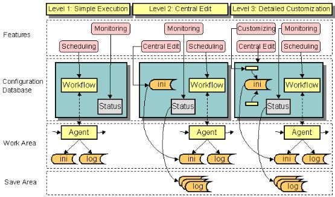
The next sections summarize the tasks involved in each integration level and the time it takes to complete the integration. Note that all of these integration tasks assume that your existing connectivity scenario is operating properly and works correctly prior to its integration into DirX Identity. The level of effort that is required to write special scripts for the specific customer connectivity environment is not included in the time estimates provided here.
Understanding Simple Execution Integration
At the first level (Simple Execution), you integrate your existing connectivity scenario - the batch file or executable and associated database or directory on which it operates - so that the C++-based DirX Identity Server (IdS-C) can schedule it and control it. To integrate to this level, you use DirX Identity Manager’s connectivity global and Expert Views to define workflows and jobs for your existing connectivity scenario in the DirX Identity Connectivity configuration. The jobs have no input and output channels, only fixed command lines (which you have copied from the batch scripts of your existing connectivity environment) that start the synchronizations. Integrating to this level requires only a few hours of work.
Once you have completed this level of integration, IdS-C is able to start the connectivity scenario’s workflows and their related activities, control their execution (check the exit codes) and write status entries to the DirX Identity server’s status area in the Connectivity configuration. You can schedule the execution of your connectivity scenario’s workflows with DirX Identity and have the C++-based DirX Identity server manage their operations. You can also view the generated status entries from DirX Identity Manager’s connectivity Monitor View, but you cannot view any related files because DirX Identity has no knowledge of them at this integration level.
Understanding Central Edit Integration
At the next level (Central Edit), you use the DirX Identity Manager’s connectivity Expert View to integrate your existing connectivity scenario so that all of your agent configuration files, import and export data files, and report and trace files are defined in the DirX Identity Connectivity configuration.
To integrate to this level, you define the name of your input, output, report, and trace files and the location at which to find them before or after a run. You can also specify if they should be deleted after the copy operation. You can also copy the content of your existing agent configuration files into the Connectivity configuration. If you’re an experienced DirX Identity user, you’ll need about one day to integrate to this level.
When you have completed this level of integration, you have a central location (access to the Connectivity configuration via the DirX Identity Manager) from which to edit these files to manage your connectivity scenario. In addition, the C++-based DirX Identity Server can copy generated files to the status area so that they are not overwritten on subsequent runs of your workflows. You can now view these files from DirX Identity Manager’s connectivity Monitor View from any point worldwide.
Understanding Detailed Customization
At the highest level (Detailed Customization), you integrate your existing connectivity scenario so that it is tightly integrated into DirX Identity. To integrate to this level, you use the DirX Identity Manager’s connectivity Expert View to set up XML descriptions for the objects that you want to extend. You can set references based on these definitions and you can write wizards to make it easy to handle your synchronizations. Integrating to this level can take several days or weeks depending on the features you require.
Once you have completed these steps, you can access the properties of existing Connectivity configuration objects or add properties to your own types of agents and connected directories to the Connectivity configuration (your XML descriptions have defined these types). You can then edit these properties from DirX Identity Manager, and the changes are automatically transferred to the configuration files that control your agents at runtime. You can even define your own wizards to provide for easy configuration. This level allows you to control consistency in a complex workflow environment. Scheduling and monitoring features are also available at this level.
Integrating a Connectivity Scenario
This section provides a tutorial that explains how to integrate a connectivity scenario that consists of a new agent and a new connected directory into DirX Identity at each of the integration levels described in "Understanding the Agent Integration Framework". The topics discussed here include:
-
A description of the sample connectivity scenario (its elements and its environment) on which the tutorial is based
-
A summary of the tasks required to integrate the sample connectivity scenario into DirX Identity for each integration level
-
The level 1 integration of the sample connectivity scenario (simple execution)
-
The level 2 integration of the sample connectivity scenario (central edit)
-
The level 3 integration of the sample connectivity scenario (detailed customization)
Note that this example does not demonstrate how to integrate an agent into a target system synchronization or validation workflow. It simply shows how to generate a two-step workflow. Synchronization and validation workflows are a combination of such two-step workflows.
Understanding the Sample Connectivity Scenario
Now we’ll demonstrate how to use the agent integration framework to integrate a sample connectivity scenario - a non-LDAP database and the save and restore tool that manages it - into DirX Identity as a new connected directory and agent and create a workflow from the DirX Identity store to the new connected directory. First, we’ll list the pre-requisites for continuing with this exercise, then we’ll describe the elements of the connectivity scenario - the non-LDAP database connected directory and agent.
Prerequisites for Integrating the Sample Connectivity Scenario
Before you can follow this exercise, you must ensure that:
-
An identity store has been set up on the main server.
-
A DirX Identity C++-based Server installation has been performed on the main server.
-
The necessary DirX Identity agents have been installed on the main server.
-
A connectivity scenario exists that contains all of the connected directories and workflows provided with DirX Identity.
-
The entire scenario runs on one machine.
Understanding the Sample Connected Directory
The database (we’ll name it MyDatabase) needs basic information about a person from the DirX Identity store (Identity Store). To keep it simple, we’ll model our database as a directory with two constant file names (import.ldif and export.ldif) in the directory C:\MyDatabase. The attributes we want to synchronize to MyDatabase are FirstName, Lastname, PersonnelID, Location, and TelephoneNumber.
Understanding the Sample Agent
The agent (we’ll name it MyAgent) that operates on MyDatabase uses LDIF file format as its interface: it reads files in LDIF format to import data into MyDatabase and produces files during an export from MyDatabase in the same format. MyAgent is controlled by command line parameters and a configuration file in "ini-file" (*.ini) format (in this section we’ll refer to MyAgent's file as its "INI file"). Again, to keep it simple, we’ll design our agent to be a batch script that takes a file and copies it to the MyDatabase directory. The agent’s INI file control.ini has the following content:
; INI File for MyAgent ; Generated by Joe Smith at 21.02.2005 12:34:43 [EntryHandling] CreateEntries=true DeleteEntries=true ModifyEntries=true
Note that this INI file does not have any influence on the real behavior of this agent. It simply shows how it could work.
The agent’s command line has the following syntax:
myagent -i [-t] ini-file infile
for import to MyDatabase
The -t parameter is optional and creates a trace file if present.
Planning the Integration Tasks
Now let’s begin to set up the sample connectivity scenario in the DirX Identity Connectivity configuration. We won’t perform the entire task in one big step. Instead we’ll go through several phases, test, and then go on to the next phase. This process reduces complexity and illustrates each integration level that DirX Identity provides. First, we’ll identify and order the tasks to be performed in each phase before we start to enter any data into the Connectivity configuration. Please note that the guidelines given here do not represent the only way to perform the sequence of tasks, but they are straightforward.
Planning for Simple Execution (Level 1)
To achieve this level of integration, we set up the new agent, the connected directory and a sample import workflow with a job that calls the new agent in the Connectivity configuration. The sample workflow imports from the identity store to the MyDatabase connected directory in full mode and contains two steps:
-
An extraction of data from the identity store (we’ll use the DirX Identity meta controller metacp to perform this task)
-
An import to the new connected directory (we’ll use the new agent MyAgent for this task).
At this level of integration, we assume that DirX Identity only knows where to start the sample workflow and what the new agent’s fixed command line looks like. DirX Identity has no knowledge of the new agent’s configuration (the agent’s INI file), input and output handling, or tracing. We also assume that the exchange of data between the meta controller and the new agent is carried out through a file (in LDIF format) at a fixed location and that all databases and processes run on one machine (the primary server).
Once we achieve this level of integration, we can:
-
Schedule and run the connectivity scenario’s sample workflow and its related activities
-
View the generated workflow and activity status entries with DirX Identity Manager
At this level, we cannot use DirX Identity Manager to view or trace files.
Planning for Central Edit
To achieve this level of integration, we:
-
Add information about the new agent’s INI file to the Connectivity configuration
-
Create the input and output channels for the job
-
Add information about the new agent’s trace file to the Connectivity configuration
In our example, we remove the absolute path for the intermediate file and use relative paths for the entire configuration. This setup facilitates the reconfiguration of entire connectivity scenarios (for example, moving the scenario from one server to another).
Once we complete this level of integration, we can:
-
Edit the new agent’s INI file as a whole from a central location without having to know where it’s located.
-
Request that all files generated by the sample workflow be saved to the status area after a run.
-
View the generated files or a workflow run.
Planning for Detailed Customization
To achieve this level of integration, we distribute the configuration parameters in the agent’s INI file to the relevant configuration objects so that we can easily edit them with DirX Identity Manager. The INI file now contains references to these distributed parameters (which are now the properties of configuration objects), which are resolved at runtime by the C++-based DirX Identity Server before it starts the agent.
Once we complete this level of integration, we can:
-
Monitor the synchronization runs from the DirX Identity Manager and view the generated status files
-
Configure the synchronization from the DirX Identity Manager at the object and property level
Note that this level of integration can vary in depth. It is up to you to define how many attributes will be accessible through DirX Identity Manager’s graphical interface.
Entering Connectivity Configuration Data
You primarily use DirX Identity Manager’s Expert View to enter Connectivity configuration data, and you should enter it in structured steps. These steps can be separated into:
-
Design tasks (planning and designing the new synchronization)
-
Setup tasks (for example, installing the new agent)
-
Configuration tasks (setting up or modifying objects in the Connectivity configuration with the help of DirX Identity Manager)
-
Testing tasks (starting your new workflow and checking to see if it works).
do not forget to put as much descriptive information as possible into the configuration objects, because documentation is important in a complex environment. Use the description field in each object for this purpose.
Integrating to Simple Execution (Level 1)
This part of the tutorial explains how to integrate the sample connectivity scenario to the "simple execution" level. In this exercise, we’ll perform the following tasks:
-
Preparation: set up the central configuration object to configure the new connected directory and agent type.
-
Copy the workflow Ident2ODBC as the basis for our workflow and adapt it.
-
Set up the new agent MyAgent.
-
Set up the connected directory MyDatabase.
-
Set up the connected directory channels.
-
Set up the new job MyJob.
-
Perform the rest of the configuration tasks.
-
Test: Check the new workflow including start and monitoring.
Setting up the Central Configuration Object
This preparation step is only necessary when you need to introduce new connected directories or agent types to DirX Identity and if you plan to go on to higher integration levels later on. If this is not the case, you can skip this step.
First, we need to set up a new connected directory type for our connected directory using the DirX Identity Manager Expert View:
-
In Connectivity → Expert View, open the central configuration object Configuration.
-
Right-click Connected Directory Types, and then select New Connected Directory Type.
-
A dialog asks for the name of the new object. Enter MyDirType.
Setting the Type field is only necessary for types that are based on the meta controller (in this case we define a connected directory that is used exclusively by our own agent).
-
Set Description to My private directory type.
-
Click OK to close the dialog.
A new leaf is inserted into the tree. You have now created a new generic connected directory type with no special features. We do no further customization at this point.
Next, we perform the same procedure for the new agent type:
-
Right-click Agent Types and perform the same procedure.
-
Create a new agent type MyAgentType and set Description to My private agent type.
-
Click OK to close the dialog.
The tree below Agent Types is extended with a new leaf. You now have created a new generic agent type with no special features. We do no further customization at this point.
Setting up the Workflow MyWorkflow
Although you can create a new workflow from scratch, it’s much easier to copy an existing workflow and modify it afterwards. We use an Ident2ODBC workflow as a template.
Before we copy the workflow, we should first create a new scenario to work with:
-
Select Connectivity → Global View.
-
Click the top-level node and select New → Scenario. Enter MyScenario into Name.
-
To copy our workflow, we need an Identity Store and an ODBC instance. Create two new connected directory icons and create MyIdentityStore from Identity Store of the Default scenario (use the Configure method) and assign HR-ODBC from the Default scenario (use the Assign method). Note that the Assign operation does not create a new object. This is okay in this example because we only need this object for the workflow copy operation (if we copy this object, we have to delete it afterwards).
Now we can work in our private environment.
Because we want to configure a workflow with two activities (the first extracts data from the identity store, the second transfers this data to our database MyDatabase) we choose a two-step workflow that works in the same direction. In this case the Ident2ODBC workflow is a good selection.
-
Create a workflow line between the HR-ODBC and MyIdentityStore icons.
-
Click the workflow line and then select New.
-
The workflow wizard opens. Click Ident2ODBC from Default/Source Scheduled/ODBC and then click Next.
-
In the General Information step, change Name to MyWorkflow.
-
Step to Export Properties and change Search Filter to objectClass=dxrUser without Persona, Facets and Functional User because we want to export all user entries under the base node cn=Users,cn=My-Company. Use the filter editor (click the button to the right of the field) to remove the upper three lines.
-
Step to the end of the wizard and click Finish.
The wizard creates a copy of the original workflow and duplicates all dependent objects. Use the structure view to view the copied object.
-
Click the line between the HR-ODBC and MyIdentityStore icons and select MyWorkflow → Show Structure.
-
The structure view window opens.
Here you see all objects that belong to this workflow (the ones marked with a (1) in the figure "Level 1 integration"):
-
Workflow MyWorkflow
-
First activity Ident2ODBC_metaCP (to be renamed to MyMetaCP)
-
First job Ident2ODBC_metaCP (to be renamed to MyMetaCP) with all scripts and the mapping information
-
Intermediate connected directory Data with its attribute configuration information (no renaming necessary)
-
Export channel from Identity Store to the first job Ident2ODBC with the selected attributes information
-
Import channel OutData to the intermediate connected directory Data with the selected attributes information
-
Export channel InData from Data to the next job with the selected attributes information
-
Second activity Ident2ODBC_ODBCImport (to be renamed to MyAgentActivity).
Seven large objects together with a lot of detailed information have been copied in seconds. To build these structures by hand would result in hours of work. Of course we will adapt the naming and other things to fit the needs of our new workflow. We also need to substitute the second job with one that calls our new agent (MyJob) and create a new connected directory MyDatabase.
First, let’s use the workflow structure view to modify the created workflow:
-
Click Edit. Please note that it is a good idea to click all table cells at the very beginning because otherwise you may perform one of the button operations immediately (you can undo this mistake by clicking Reset and then Edit again).
-
Click the activity Ident2ODBC_metaCP and then click
 . The activity object opens. Change the name to MyMetaCP and click OK.
. The activity object opens. Change the name to MyMetaCP and click OK. -
Click the activity Ident2ODBC_ODBCImport and then click
 . The activity object opens. Change the name to MyAgentActivity and click OK.
. The activity object opens. Change the name to MyAgentActivity and click OK. -
Click the job Ident2ODBC_metaCP and then click . The job object opens. Change the name to MyMetaCP.
-
Click the Operation tab and uncheck Delta synchronization. (For easier testing it makes sense to switch off this feature.) Click OK.
-
Click the Ident2ODBC channel and then click
 . The channel object opens. Change the name from Ident2ODBC to MyWorkflow and click OK. We set the names of channels at a connected directory to the workflow name to help us understand better where a specific channel is used when we look at the channel folder of a connected directory.
. The channel object opens. Change the name from Ident2ODBC to MyWorkflow and click OK. We set the names of channels at a connected directory to the workflow name to help us understand better where a specific channel is used when we look at the channel folder of a connected directory. -
Click the OutData channel and open it. Select the Entry Handling tab. Set Add Entries to ADD otherwise the job will not create any entries in the intermediate file. Click OK.
-
Click Save to exit the edit mode.
-
It is not necessary and does not make sense to edit the second job Ident2ODBC_ODBCImport and the connected directory ODBC because we will replace this job with a job that runs our agent and the ODBC connected directory with our new MyDatabase.
-
Click Close to exit the structure view.
Now we’ll check and modify the other objects we created:
-
In the Expert View, open Workflows → MyScenario → Source Scheduled → ODBC. The workflow MyWorkflow exists. Change the name of the folder from ODBC to MyAgent.
-
Open Jobs → MyScenario → Source Scheduled → ODBC. There are two jobs: MyMetaCP and Ident2ODBC_ODBCImport. Change the name of the folder from ODBC to MyAgent.
The next step is to set up the new agent MyAgent.
Setting up the Agent MyAgent
MyAgent is the new agent that we must set up:
-
To install your new agent, copy the prepared file myagent.bat to the DirX Identity bin directory:
-
Copy the prepared executable from the directory install_path*\data\extension\MYAGENT.BAT* to the directory install_path*\bin\*
-
Create the directory work_path*\MyScenario\Source Scheduled\MyAgent\MyWorkflow\MyAgentActivity*.
-
Move the prepared INI file CONTROL.INI here (from the install_path*\data\extension\* directory).
-
Note: If you are not sure how the work_path or your install_path is set up, open the object with the name of your computer in the configuration database in the Configuration → DirX Identity Servers → C Servers folder.
-
Create a new agent object in the connectivity configuration. In Connectivity → Expert View, right-click the Agents folder and select New → MyAgentType.
-
Set Name to MyAgent and set Description to MyAgent to handle MyDatabase.
-
Enter the name myagent.bat in Executable. Using a relative pathname makes it easier to make changes later on if the server must be changed.
-
The Agent Type field is already set to MyAgentType. Set Directory Types to MyDirType (click the upper button to the right of the field and select MyDirType from the pull-down list).
-
Click OK to create the object.
You have now created the new agent with the agent type MyAgentType that can handle the connected directory type MyDirType.
-
In Configuration → DirX Identity Servers → C Servers, open the object with the name of your computer and link the new agent object to it: click the Agents tab, click Edit, in the Agents box, click
 , then select MyAgent from the object browser.
, then select MyAgent from the object browser. -
In the Versions box, click and enter MyAgent 1.0 into the text field that appears at the bottom of the list.
-
Click Save to store the object.
This step indicates that this agent can be run on this DirX Identity server and which version is installed. The DirX Identity installation procedure performs this step automatically for all DirX Identity agents. You must perform this step by hand for any other agents.
Setting up the Connected Directory MyDataBase
In this example, we assume that the connected directory MyDatabase resides on the primary server. This means that both the agent and the directory are on this machine. For security and performance reasons, we recommend that you keep the connected directory and the agent together on the same machine. Because there is no network traffic when the agent writes to MyDatabase, it will run at maximum speed.
First, you must create the file directory C:\MyDatabase with the Windows Explorer (a setup task). Then you must create a relevant description for it in the Connectivity configuration:
-
In Connectivity → Expert View, right-click the Connected Directories → MyScenario folder (create the folder if it doesn’t already exist) and select
New → MyDirType. -
Set Name to MyDatabase.
-
Link the database to the relevant service object (your machine name: select it from the tree browser in the Configuration → Services → System directory).
-
Do not set the Wizard and Viewer Command fields at this point (we’ll do this later on).
-
Click OK to create the connected directory.
In the list of connected directories, a new entry MyDatabase is displayed.
Setting up a Channel to MyDatabase
Now we must set up the channels to the connected directory. First, we need to set up a related channel MyChannel to the MyDatabase connected directory:
-
Right click Connectivity Configuration Data and select Reload object descriptors.
-
Open the Connected Directories → MyScenario → MyDatabase object and click Channels.
-
Select New → MyDatabase (Channel) and enter MyChannel in Name.
-
Click OK.
You have now created a new connected directory MyDatabase and a related channel MyChannel to access this directory.
Setting up the Job MyJob
Now we need to create a new job object because there is no template for this agent in the DirX Identity Connectivity configuration at this point.
-
In Connectivity → Expert View, right-click the Jobs → MyScenario → Source Scheduled → MyAgent folder.
-
Select New and then MyAgent.
-
Set Name to MyJob and Description to Job to import the LDIF file to MyDatabase.
-
As you can see, the related agent is MyAgent.
-
Enter a fixed command line:
-i -t control.ini C:\MetahubData\import.ldif
This command line directs the agent to perform an import operation with trace switched on based on the INI file control.ini and on the data file import.ldif. -
Use the default timeout (2 hours).
-
Do not touch any settings in the other tabs of this object and click OK.
You have now created a simple job object that can be executed and takes its input from a fixed location in the file system.
Because the agent uses the file import.ldif, we need to set up the intermediate connected directory correctly.
-
Open the MyMetaCP job and then the Data object.
-
Click Datafile in the Files tab, then Edit and change the file name from data.txt to C:\MetahubData\import.ldif. This must be the same path and file name that we set up in the job’s command line.
-
Click Save to store this information.
Now we have done all necessary work. We can do the remaining configuration tasks in the structure view.
Completing the Configuration
Now we can use the workflow structure view to complete our configuration:
-
In Connectivity → Global View, select the workflow line in the scenario MyScenario and open the structure view for MyWorkflow.
-
You can see that the second activity MyAgentActivity does not refer to the correct job, channel and connected directory.
-
Click Edit and select the job. Click
 to open the object browser and select MyJob from the folder MyScenario → Source Schedule→ MyAgent in the folder Jobs. Click OK. The link is shown in the structure view but the channel and connected directory objects are no longer displayed.
to open the object browser and select MyJob from the folder MyScenario → Source Schedule→ MyAgent in the folder Jobs. Click OK. The link is shown in the structure view but the channel and connected directory objects are no longer displayed. -
Open MyJob, select the Input/Output Channels tab and create a new line in the Input Channel field.
-
Click
 to open the object browser and select the InData channel from the Jobs → Source Scheduled → My Agent → MyMetaCP → Data → Channels folder. Click OK.
to open the object browser and select the InData channel from the Jobs → Source Scheduled → My Agent → MyMetaCP → Data → Channels folder. Click OK. -
Create a new line in the Output Channel field.
-
Click
 to open the object browser and select the MyChannel channel from the Connected Directories → MyScenario → MyDatabase → Channels folder. Click OK.
to open the object browser and select the MyChannel channel from the Connected Directories → MyScenario → MyDatabase → Channels folder. Click OK. -
Click OK to store the job object.
Now you can see the complete structure of your workflow. Click Save to store it.
Our scenario does not yet contain our MyDatabase connected directory and our workflow line still connects MyIdentityStore and HR-ODBC. Let’s change it:
-
In Connectivity → Expert View, select the workflow MyWorkflow again. Click Edit.
-
Click
 to the right of the Endpoints field. This action forces DirX Identity to calculate the endpoints to determine which workflows fit between two connected directories. The value should now be set to LDAP-MyDirType.
to the right of the Endpoints field. This action forces DirX Identity to calculate the endpoints to determine which workflows fit between two connected directories. The value should now be set to LDAP-MyDirType. -
In Connectivity → Global View, select MyScenario again.
-
Create a new connected directory icon (perform New Connected Directory).
-
Assign MyDatabase to it.
-
Create a workflow line between MyIdentityStore and MyDatabase.
-
Assign MyWorkflow to this line. The arrow is shown now correctly.
-
Finally, remove the HR-ODBC connected directory from your scenario. It is no longer needed.
To avoid having unused objects in our connectivity configuration, we should now delete the Ident2ODBC_ODBCImport job in the Expert View (because it is no longer used):
-
In Connectivity → Expert View, open the Jobs → MyScenario → Source Scheduled → MyAgent folder and click the Ident2ODBC_ODBCImport job. Select and delete it (set the check for references check box). DirX Identity will delete the object because there are no longer references that point to it.
Test the Newly Created Workflow
You can use the Global View or the Expert View to test the newly created workflow. If you followed the "Getting Started" exercises, you’ve already learned how to work in the Global View. Let’s now try the Expert View.
We assume that the connected directory and the Identity Store are up and running. We also should check that the connected directory MyDatabase is empty before we run the workflow for the first time: examine the directory C:\MyDatabase and delete any files.
-
In Connectivity → Expert View, open the Workflows folder.
-
Right-click MyWorkflow in the MyScenario → Source Scheduled → MyAgent folder and select Run Workflow.
-
The workflow is running. You can watch the workflow’s progress by viewing the activities in the Structure tab. Wait until both activities change their color to green. In this case, the second activity shows light red, which indicates a warning from the stdout message of the agent.
-
In Connectivity → Monitor View, open MyScenario → Source Scheduled→ MyAgent → MyWorkflow.
-
Click the entry below and check the attributes. You can see the start and end time and the Result. This value should be closed.completed.ok.
-
If you see another value, something is wrong in your configuration. DirX Identity can help you find the error. Look at the Remark field. Normally you’ll find a Workflow execution terminated (at least one activity failed) error.
-
Double-click the workflow entry to open it. You should see entries for the first and the second activities. You can click on each entry and check the result. The Result field should show closed.completed.ok
-
If this is not the case, look at the Remark field. You will see one or more error messages. You cannot read long messages directly in these fields. Click the bottom icon to the right of the table and a configurable text editor will open.
-
The messages give you hints about where your agents failed. Try to fix the problem and run the workflow again.
-
After some debugging, you should have a running workflow.
In our case, there is a message in the MyAgentActivity status entry. It gives a hint that the agent reported something at stdout. Check the process info file for details:
-
Change to the Trace tab and click the icon after Process Data. The process info file opens.
-
You can see that our batch file reported that a file was copied successfully.
-
Look at the work path in the file system (installation area). Open the directory work, then MyScenario → Source Scheduled→ MyAgent → MyWorkflow. Click the MyAgentActivity. You should see two files: the INI file that we copied here by hand and the trace.trc file. Open this file and you’ll see that our -t parameter in the command line worked.
-
Now look at the status area (installation area). Navigate to the status path and open the status directory and then locate the entry that begins with MyWorkflow. Click MyAgentActivity.
-
You’ll find there the ProcessInfo.txt file that we examined from the status entry in the Monitor View as well as the import.ldif file that DirX Identity automatically copied here (the flag Copy to Status Area is set for this file).
-
If you click the MyMetaCP… folder you’ll see many more files that the system copied after the Metacp job executed. Because this job is integrated at level 3, all files are saved: all Tcl files, the attribute configuration files and the data file import.ldif.
-
Now examine our MyDatabase connected directory. It is located in the path C:\MyDatabase. Open it and you will find the data.ldif file that our agent copied there (this is the operation that generated the message 1 file copied).
You can see that a lot of events occur even when we have only integrated our agent at level 1. Let’s now go on to integration level 2.
Integrating to Central Edit (Level 2)
This part of the tutorial demonstrates how to integrate the sample connectivity scenario to the "central edit" level. The following figure highlights the objects that are necessary for the sample connectivity scenario to take it from the "simple execution" level to the "central edit" level.
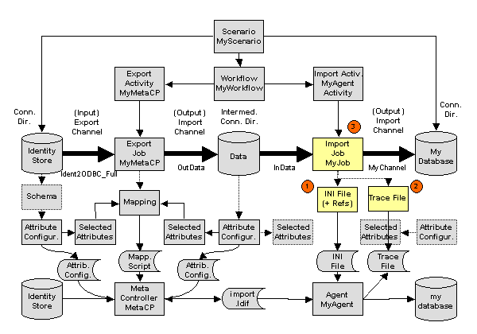
To integrate our sample connectivity scenario to "central edit", we’ll perform the following tasks:
-
Register and import the INI file (1)
-
Register the trace file (2)
-
Modify the MyJob object (3)
-
Test the modified workflow
Registering and Importing the INI File for MyJob
To register and import the INI file for MyJob:
-
In Connectivity → Expert View, open the Jobs → MyScenario → Source Scheduled → MyAgent folder and right-click MyJob.
-
Select New → INI file.
-
A property dialog opens. Do not change the name. Enter Import INI file into Description.
-
Click the File tab and enter control.ini into Filename. Do not change any other properties.
-
Click the Content tab and then click Import text. A file selection box opens. Navigate to the location where your INI file is stored (in the work area: work_path*\MyScenario\Source Scheduled\MyAgent\MyWorkflow\MyAgentActivity*) and select it. Click Open. The content of the INI file is now imported into the Connectivity configuration and shown in the Content tab.
-
Click OK to save the new INI file object. .
-
Now the INI file is located under the MyJob object, but it’s not yet linked to it correctly. To link it to the job object:
-
Click the MyJob object again. Select the Input/Output Channels tab and click Edit.
-
Click
 to the right of the Inifile field.
to the right of the Inifile field. -
A dialog opens that allows you to navigate through the DirX Identity Connectivity configuration data to the required object to be linked (the current location should be the job object). Open it, click the INI file object that you previously created, and then click OK.
-
Click Save to store the object.
Now the customer-specific agent’s INI file with its content is completely contained in the Connectivity configuration. You can view or edit it here with DirX Identity Manager. Any time you run the workflow, this INI file is generated to the file system before your agent executes.
Registering the Trace File for MyJob
To register the trace file for MyJob:
-
Open the Jobs → MyScenario → Source Scheduled→ MyAgent folder from the Expert View and right-click MyJob.
-
Select New → File. A property dialog opens. Change the name to Trace File, enter Trace file for MyAgent into Description.
-
It is important to inform DirX Identity about the file name of the trace file. Enter trace.trc into Filename. DirX Identity will search for a file of this name and save it into the status area (but only if Copy to Status Area is checked).
-
Do not change anything else and click OK to save the new object. It is located under the MyJob object but not yet linked to it correctly.
The last step in this sequence is to link the trace file object to the job object.
-
Click the job object again. Select the Tracing tab and click Edit.
-
Click the last icon after the Tracefile field.
-
A dialog opens that allows you to navigate through the DirX Identity Connectivity configuration data to the object to be linked (the current location should be the job object). Open it, click the Trace File object you previously created, and then click OK.
-
Click Save to store the object.
Now the trace file is described in the Connectivity configuration. Each time you run the workflow, this trace file should exist after your agent executes.
Modifying the Job MyJob
Now we’ll change the command line to use the correct file names:
-
Click MyJob and then click Edit.
-
Change the command line to:
-i -t "<?Job@IniFile-DN@FileName/>" "<?Job@InputChannel-DN@SelectedFile-DN@FileName/>"
do not forget the quotes around the filenames!
Our command line has introduced some references. The first reference retrieves the filename by looking at the job object, following the reference to the INI file (@IniFile-DN) and taking the content of the FileName field as the filename. Now you can change the filename of this object at any time, and the reference will adjust the command line correctly.
The second reference works similarly: it starts with the job object again, follows the reference to the InputChannel (@InputChannel-DN), then to the selected file in the connected directory (@SelectedFile-DN) and takes the content of the FileName field as the filename. (For more information about references, see section "Customizing Object References" in the DirX Identity Customization Guide.)
Both parameters make our job definition more flexible because we can now edit its elements at the user interface and configuration parameters are adapted automatically.
We also no longer want a fixed location for our intermediate data file. A more flexible concept is to transfer the data file in the work directories using the Channel Mapping, which works automatically:
-
Set up a reference in your command line (<?Job@InputChannel-DN@SelectedFile-DN@FileName/>) which creates the correct file name for your agent. We just carried out that step.
-
Change the fixed location in your data file object under your job object.
-
To change the fixed file location of the intermediate connected directory:
-
Click the Datafile entry sub-object under MyMetaCP → Data.
-
Remove the path (C:\MetahubData) from the Filename field. Leave only the filename import.ldif.
-
Click Save.
Editing the INI File and Testing the Modified Workflow
Before we run the modified workflow, we’ll edit the INI file to contain your name:
-
Double click MyJob. The sub-objects are shown.
-
Click INI File and click the Content tab.
-
Click Edit and change Joe Smith to your name.
-
Click Save.
Run the modified workflow again and look at the result in the Monitor View. Nothing has changed in the workflow status entry and in the MyMetacp status entry.
-
Click the MyAgentActivity status entry and select the Files tab.
-
You can see that there are new entries for the trace file (open it) and the INI file (open it to see that your name is present). This shows that you no longer need to know where your files reside.
Integrating to Detailed Customization (Level 3)
Recall that when we set up the central configuration object, we defined a new agent type and a new connected directory type. Now we can use these definitions and define extensions for them at the DirX Identity Manager user interface level. We will only perform this task for the agent type object by defining an XML description for jobs that are based on agents of this type. This way, we can extend the generic job object by defining additional properties in existing tabs or completely new properties for this type of job object. We can also remove properties or complete tabs from this object. See section "Customizing Connectivity Objects" in the DirX Identity Customization Guide for details about the possibilities.
Next, we will use these new properties at the user interface level to provide for easy editing. But at the moment there is no mechanism that manages the proper setting of the corresponding attributes in the INI file. To solve this problem, you can use references to connect the definition in the INI file with the property at the user interface level. At runtime, the C++-based DirX Identity Server takes care of the correct substitution of the corresponding values before it starts the agent. The agent is unaware that the INI file is generated each time directly before each execution. Performing this task guarantees consistency between properties at the user interface level and information in configuration files. See section "Customizing Object References" in the DirX Identity Customization Guide for further details. The following figure highlights the objects that are necessary for the sample connectivity scenario to take it from the "central edit" level to the "detailed customization" level.
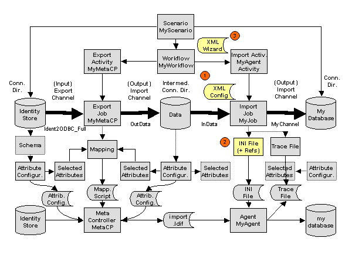
To integrate our sample connectivity scenario to "detailed customization", we’ll perform the following tasks:
-
Create an XML description for property extensions at the job object (1).
-
Define references in the agent’s INI file to improve consistency (2).
-
Test whether changes to the newly added properties with DirX Identity Manager affect the synchronization.
-
Create a wizard for the workflow (3).
-
Test the wizard.
-
Re-run the workflow wizard.
-
Export the scenario.
Creating the XML Job Description
In this step, we define the extensions to the job object that are necessary to resolve the references that will be defined in the next step.
First we create the XML description object for MyAgent:
-
Select Connectivity → Expert View.
-
Open Configuration → Agent Types → MyAgentType.
-
Right-click Object Descriptions and select New → XML File.
-
Enter myagent-job.xml into the name field and adjust the description field accordingly.
-
Click the Content tab and then Import Text …
-
In the file dialog, select the file template-job.xml in the folder install_path*\data\extension\* and click Open.
-
Save the object.
Now you’ve created an XML description for the MyAgent type. Change it as follows:
-
Replace the comment Template Job with MyAgent Job.
-
Note that you’ll find an entry superior="Generic-Job"in the section <object … . This means that your job object’s XML description is based on the Generic-Job description (your description inherits all properties from this description). You could also use another base description.
-
Go to the <propertysheet> section. This is the section that controls the tabs in your job object (these tabs are named propertypages here). These pages have a name (general, deltahandling, channels and tracing) and a related title which is the is the title of tab that appears when you are using DirX Identity Manager (Job Properties, Delta Handling, Input/Output Channels, Tracing).
-
You can add propertypages here, delete them, or modify them to create your individual job object. But be careful not to destroy anything that is needed by DirX Identity.
-
Do not change the class property! This is the default editor (java class) which allows DirX Identity to handle lists of properties.
-
The layout parameter defines the properties that are contained in your property-page. You can change it to your requirements.
-
The <properties> section defines the description of the individual property extensions. For the template (the file from which you copied your XML file) only one example dxmSpecificAttributes property is defined (Example).
-
Its type is defined as BooleanInteger. Other types as String, Integer and Boolean are possible, too. You can also define default values and much more. The "Customizating Objects" section in the DirX Identity Customization Guide describes the possibilities.
Now we understand the basic concept and we are able to change the job description to our requirements.
-
We decide to keep the four tabs as they are and add a fifth tab. Copy the fourth tab (tracing) and insert it after the tracing tab.
-
Change the tab name to MyAgentProperties and the title to "My Agent Properties".
-
Now define the properties. Copy the property section with the Example value three times and then change it to (do not forget the <property and /> tags!):
name="dxmSpecificAttributes(CreateEntries)" type="java.lang.Boolean" label="Create Entries" defaultvalue="true" name="dxmSpecificAttributes(DeleteEntries)" type="java.lang.Boolean" label="Delete Entries" defaultvalue="true" name="dxmSpecificAttributes(ModifyEntries)" type="java.lang.Boolean" label="Modify Entries" defaultvalue="true" name="dxmSpecificAttributes(Trace)" type="java.lang.String" label="Trace" defaultvalue="-t"
-
Next we define the tabs that should display these properties. Change the layout definitions of the tabs as follows:
name="tracing" ... layout="...,_SP(Trace)" name="MyAgentProperties" ... layout="properties:_SP(CreateEntries),_SP(ModifyEntries),_SP(DeleteEntries)"
Note that we define only the Trace property in the tracing tab. All other properties are defined for the MyAgentProperties tab. The _SP is a shortcut to dxmSpecificAttributes that makes our definitions easier to read.
-
Do not forget to delete the dxmSpecificAttributes(Example) entry in the layout definition of the general tab.
-
To activate the new definition, you can either exit the DirX Identity Manager or use the function Reload Object Descriptors from the context menu.
-
The MyJob object should now contain the five tabs together with the four new attributes.
Defining the References in the INI File
In this step, we define references in the INI file that take the information from the MyJob object.
-
Select the MyJob object in the Jobs → MyJobs folder again and open it.
-
Select the INI File object and then click Content.
-
Click Edit and change the following lines to:
; Created by <your name> at <?date/>:<?time/>
and
CreateEntries=<?Job@SpecificAttributes(CreateEntry)/> DeleteEntries=<?Job@SpecificAttributes(DeleteEntries)/> ModifyEntries=<?Job@SpecificAttributes(ModifyEntries)/>
-
Click Save to store the object.
The created references have the following meanings:
-
Date and time are set to the actual date and time.
-
Three special attributes at the job object affect the settings in the INI file. At runtime, DirX Identity goes to the MyJob object and examines the requested multi-value attribute SpecificAttributes (in this case, it searches for or a name like CreateEntries in the first part). It then takes the value and replaces the reference in the INI file with it.
For example, suppose that SpecificAttributes contains the values:
CreateEntry true
DeleteEntries false
ModifyEntries true
Then the reference
DeleteEntries=<?Job@SpecificAttributes(DeleteEntries)/>
is replaced by
DeleteEntries=true
Note that there is an error in the second line: the CreateEntry value should be CreateEntries. We’ll show how DirX Identity reports this error later on.
Note also that you can reference fixed attributes in objects (examples were shown in the command line references).
The last step is to define the trace parameter in the command line to be a reference:
-
Click MyJob and then click Edit.
-
Change the -t parameter in the command line to
<?Job@SpecificAttributes(Trace)/>. Make sure that there are blanks before and after this value. -
Click Save to store the object.
Changing a Property and Testing the Modified Workflow
Before we run the workflow again, we’ll change one of our new properties:
-
Click MyJob, click the tab My Agent Properties, and then click Edit.
-
Note that the three checkboxes are surrounded by a red border. This means that the value is not defined (no attribute in the database exists that has either the value true or false). To set one of these values, click it; to reset it, you must click twice.
-
Check all three check boxes and Save the object. This is necessary to create SpecificAttribute entries for all three attributes. This action is only necessary for objects that already exist. New objects contain the default values and will work immediately.
-
Click Edit again.
-
Uncheck Delete Entries.
-
Change to the Tracing tab and enter -t into the Trace field.
-
Click Save to store the object.
-
Now run the workflow again and watch it in the Structure tab.
-
The last activity turns red because an error has occurred (we know which one it is).
-
View the result in the Monitor View (click the bottom icon to the right of Remark to display the messages in an editor window).
-
The error message tells us that CreateEntry is not a valid Property. Instead we must write CreateEntries.
-
Correct the reference in the INI file and run the workflow again.
-
View the result in the Monitor View.
-
Look at the INI file in the Files tab of MyAgentActivity and open it. It should reflect the referenced properties from the job object.
Creating a Workflow Wizard
The next task is to define a wizard for the workflow MyWorkflow. The best way is to use an existing wizard and change it. In this case, we use the wizard from the Ident2ODBC workflow because we copied the workflow from this object.
-
Click Connectivity → Expert View
-
Open Configuration → Agent Types → ODBC → wizards
-
Right-click wf-LDAP-ODBC.xml and select Copy Object.
-
Set Name to wf-LDAP-MyDirType.xml and adjust Description. Click OK.
-
Move the object to the wizards folder of your MyAgentType object.
-
Select it again and click Edit.
-
Change to the Content tab.
-
Remove the line:
<illustrator name="Import" title="Import Properties" />
-
Remove the entire section that begins with:
<step name="Import" ...
-
Add a new step after the Export Tracing step:
<step name="MyAgentProperties" title="Set MyAgent Properties" illustrator="MyAgentProps" node="dxmActivity-DN[dxmIsEndActivity=true]@dxmRunObject-DN"> <description> Set the specific parameters for MyAgent. When done, click on the 'Next >>' button to continue. </description> <propertypage class="siemens.dxm.gui.components.PropertyPageGeneric" reference="MyAgentProperties" /> <prestep class="siemens.dxm.wizard.PreStepImpl" /> <poststep class="siemens.dxm.wizard.PostStepImpl" /> </step> -
Add this line to the illustrator section after the Export Tracing line:
<illustrator name="MyAgentProps" title="MyAgent Properties" />
-
Save the object.
-
We have created the wizard but it is not yet referenced from our workflow. These steps set the reference:
-
Select MyWorkflow and click Edit.
-
Click to select the wf-LDAP-MyDirType.xml wizard.
Now you can test the wizard.
Testing the Workflow Wizard
To test the wizard:
-
Click the workflow line in MyScenario.
-
Select MyWorkflow → Configure.
Check all the steps in the wizard.
You can add, modify or delete other steps if you extend your agent or workflow.
With this step, the integration of your agent and connected directory at the highest level (level 3) is complete.
Running the Workflow Again
Now we should run the workflow again to make sure that everything is correct:
-
Run the workflow.
-
Watch the result in the Structure tab of the run window. The second activity turns to red.
-
Click this activity. The status entry opens and you can see a Status of closed.completed.error.
-
You can see that the Remark field contains a lot of information. Click the last button to the right of this field. A text editor opens.
-
DirX Identity tells you that the retrieval of the job configuration data (the INI file, see second line) did not work correctly. The third line contains the most relevant information:
-
while evaluating expression Job@SpecificAttributes(CreateEntry) in line 5 at position 16.
-
evaluation of @dxmSpecificAttributes(CreateEntry) failed: No matching value found.
-
-
DirX Identity tells you that there is an error in line 5 at position 16 of the INI file. The Specific Attribute CreateEntry does not exist. Of course this attribute’s name is CreateEntries.
-
Change the INI File content and check with another run that everything is now correct.
Your scenario is now complete and tested up to some level. Next you should prepare it for export.
Exporting Your Scenario
You can distribute your scenario by exporting it to an LDIF file. There are different ways to do this, but we recommend that you use the collection mechanism because it allows you to have full control over the amount and depth of the objects you’d like to transfer. As discussed in "Reusing the Sample Domain", a collection allows you to define a set of objects and subtrees that you can export to an LDIF file for subsequent transfer to a target location, either another DirX Identity connectivity domain or a configuration management system like git.
-
Open Connectivity → Expert View.
-
Click Collections.
-
Select New → Collection (you could first create a folder for your collections).
-
Enter MyScenario Collection into Name and enter a Description.
-
Click
 to the right of Path. Select a location at which to store the LDIF file and set the name for the file.
to the right of Path. Select a location at which to store the LDIF file and set the name for the file. -
Save the new object.
Now you can define the collection in detail:
-
Edit the object again.
-
Click the Objects tab.
-
Create a new line and select the collection itself. This action enables the collection to transfer its own definition to the target location (i.e., the definition is now part of the LDIF file). Otherwise you would lose this information after the transfer. If you created a folder before, do not forget to include this folder into your collection definition here (otherwise the folder is missing at the target location).
-
Click the Subtrees tab.
-
Add the following subtrees to your collection:
Agents/MyAgent
Configuration/Agent Types/MyAgentType
Configuration/Connected Directory Types/MyDirType
Configuration/Services/MyScenario
Connected Directories/MyScenario
Jobs/MyScenario
Scenarios/MyScenario
Workflows/MyScenario -
Click Save.
-
Select Export Collection. The collection is exported to the LDIF file.
Check the file content to verify that all objects and subtrees are exported correctly. You can now transfer the file to the target location.
Maintaining the Privilege Structure
Now we’ll perform some maintenance tasks in the privilege structure to illustrate the features of DirX Identity in this area. In this exercise, we will:
-
View the privilege structure to see the privilege data that needs to be changed
-
Create separate privileges for the My-Company Sales and Professional Services groups
Checking the Privilege Structure
Before we start to maintain the privilege structure, we’ll tour My-Company’s Privilege view to familiarize ourselves with the sample domain in this area. You’ll see that some of the data in the structure is not in an optimal state. We’ll correct this data in this exercise.
-
Click Provisioning → Privileges. You’ll see folders for Roles, Permissions and Groups.
Checking My-Company’s Department-Specific Roles
First, we’ll look at My-Company’s Department-Specific role structure and compare it with the roles assigned to a Professional Services user:
-
Open Provisioning → Privileges → Roles. In addition to the query folders (Errors and ToDos), you’ll see folders for My-Company’s B2B Roles and Corporate Roles.
-
Open Corporate Roles to view the subfolders.
-
Open the Administration folder. You can see 8 administrative roles for DirX Identity itself (they start with DXR) and some more for other target systems. The owner of all of these roles is Nik Taspatch. Because all roles require approval (the flag is set), Nik must approve these roles when they are assigned to users because he is responsible for these resources.
-
Open the Department Specific folder. It contains a specific role for most of the departments. The owner is the department manager. You will note that roles for IT and Professional Services are missing. How does that work?
-
Click Provisioning → Users. Open My-Company → Professional Services. Click Auffret Jean-Marc and then click the Assigned Roles tab. Besides the Internal Employee role, only the Sales role is assigned to this user and all the other users of this department because the department does not have its own role.
-
This works almost perfectly as long as Sales and Professional Services employees use the same services and tools. Click Auffret Jean-Marc and then click Edit. Scroll down in the Available Roles tab to the Parking Place Munich role. Select it and assign it to this user. Now click Save. You will encounter an error No group matches when the Group File Share permission is to be resolved (the full DN is cn=Group File Share,cn=General,cn=Corporate Permissions,cn=Permissions,cn=My-Company).
-
Click Cancel and then Reset.
-
Click the Assigned Groups tab. You can see the FS Sales group, which is strange because the error message told you that there is no matching group.
Checking My-Company’s Group File Share Permission
Now we’ll take a look at the Group File Share permission and the roles and groups assigned to it to find the reason for that error message:
-
Click Provisioning → Privileges and open Permissions → Corporate Permissions → General. Click Group File Share and then click the Roles tab. You can see that the role Internal Employee uses this permission.
-
Now click the Match Rules tab. You can see that the ou and c attributes are used to resolve this permission. For Jean-Marc, the values are ou=PS and c=ES.
-
Click the Assigned Groups tab. You can see two FS Sales groups. Click at the end of the row to check these two groups. The first one matches c=US and OU=SA. The second one matches c=DE, ES, FR, GB, IT and OU=SA. This explains the error message. There is no matching group for ou=PS (you can check the other groups as well to verify this). But where does the FS Sales group come from?
Checking My-Company’s Sales Tasks Permission
To find where the FS-Sales group comes from, let’s take a look at My-Company’s Sales Tasks permission structure:
-
Click the Sales Tasks permission in the Department Specific folder and then the Assigned Groups tab. It uses the same two FS Sales groups but the match rule uses only the c attribute. The resolution of this permission assigns the FS Sales group of the Windows Domain Europe target system.
-
Let’s check to see how the Sales Tasks permission is assigned to the user. In the Roles tab, you can see that the Sales Tasks role uses this permission.
-
Check the Assigned Roles tab of the user to see that this role is assigned by a rule (see the Assigned by column).
-
Click the Policies view. Open Policies → Rules → Role based scenario → Corporate.
-
Click Sales Tasks, and then click the Filter tab. The filter searches all users under the My-Company subtree with ou=SA or ou=PS. In combination with the ou matching rule of the FS Sales permission this works well (the total filter is (ou=SA or ou=PS) and c=ES).
Identifying the Maintenance Tasks
From the tour we just took of My-Company’s privilege structure, we can see two problems that need to be resolved:
-
The Professional Services department does not have its own file share FS Professional Services. This is the reason for the error message we received.
-
The FS Sales group is assigned twice, once by the Group File Share permission and once by the Sales Tasks permission. This assignment duplication is not transparent.
The powerful features of DirX Identity can sometimes result in erroneous situations as, for example, the double assignment of a group. Nevertheless we can see that DirX Identity provides a lot of features to find the cause of such problems.
Correcting the Problems with the Privilege Structure
Now we’ll fix the problems we found in the last section. First, we’ll remove the FS Sales groups from the Sales Tasks permission and then we’ll create a file share privilege structure for the Professional Services department.
Correcting the Sales Tasks Permission
To remove the FS Sales groups from the Sales Tasks permission and consequently from the related users:
-
Click the Privileges view.
-
Open Permissions → Corporate Permissions → Department Specific → Sales Tasks and select the Assigned Groups tab.
-
Click Edit, select the two FS Sales groups in the lower pane and remove them.
-
Click Save.
DirX Identity removes the groups directly from the related set of users. Now let’s check the Users view to make sure:
-
Click the Users view. Open Users → My-Company → Sales → Sales Europe → Fani Shelby and select the Assigned Groups tab. The group FS Sales is still there but in state DELETED. Subsequent synchronization of this information to the target system Windows Domain Europe would remove the group membership there.
-
Open Users → My-Company → Sales → Sales Europe → Klarmann Bruno and select the Assigned Groups tab. The group FS Sales is there in state ADD. This comes from the Group File Share permission that works only for internal employees. Shelby Fani is a contractor.
Creating a File Share Privilege Structure
Now we’ll create a separate privilege structure for the Professional Services department. Because this privilege structure is similar to the Sales privilege structure, we can copy many of the objects we’ll need for our new structure from the Sales privilege structure and modify them afterwards. We’ll start by creating the FS Professional Services group and then copy and modify the Sales Tasks permission and the Sales Tasks role.
Creating the Groups
First we’ll create a new FS Professional Services group in the Windows Domain Europe and Windows Domain USA group folders:
-
Click the Privileges view.
-
Open Groups → Windows Domain Europe.
-
Right-click the General folder and select New → Group. A dialog opens.
-
Enter FS Professional Services in Name and Group file share for professional services in Description. Click OK to store the new group.
-
Click Edit and enter some additional values. Create 5 new lines in Country and select DE, ES, FR, GB and IT. Enter PS into Organizational Unit. This setting means that this group can be selected when the organizational unit is set to PS and to one of the country values.
-
Enter the link from Owner to Bellanger Lionel.
-
Click Save to store the modified object. Note that DirX Identity reports an error in the Error field: Group is invalid: it is not referenced by any permission because the group is not referenced by a permission.
-
Open Groups → Windows Domain USA.
-
Right-click the General folder and select New → Group. A dialog opens.
-
Enter FS Professional Services in Name and Group file share for professional services in Description. Click OK to store the new group.
-
Click Edit and enter some additional values. Create a new line in Country and select US. Enter PS into Organizational Unit. This setting means that this group can be selected when the organizational unit is set to PS and country is set to US.
-
Enter the link from Owner to Bellanger Lionel.
-
Click Save to store the modified object. Note that DirX Identity reports an error in the Error field: Group is invalid: it is not referenced by any permission because this group is not referenced by a permission, either.
Adding the New Groups to the Group File Share Permission
Next, we’ll add the new file share groups to the Group File Share permission:
-
Click the Privileges view.
-
Open Permissions → Corporate Permissions → General.
-
Click Group File Share and then the Assigned Groups tab.
-
Click Edit.
-
Select Name in Search for and enter fs into the value field. Click . Four groups are displayed in the upper pane. Select both FS Professional Services groups and then click to move them to the lower pane.
-
Click Save. DirX Identity processes the change. All users that have this permission assigned are resolved anew.
-
Check Fani Shelby from the Sales department again to see that no new group has been added during the resolution. Check Auffret Jean-Marc from the Professional Services department to see the result. He has the new FS Professional Services group (the FS Sales group is still in the DELETE state). All the other members of this department have one of the two groups depending on the country in which they reside.
Copying the Sales Tasks Permission and Role
Now we’ll copy the Sales Tasks permission and role and adapt them to Professional Services:
-
Click the Privileges view.
-
Open Permissions → Corporate Permissions → Department Specific.
-
Right-click Sales Tasks and select Copy Object. A dialog opens. Change the name to Professional Services Tasks and click OK. The permission is copied.
-
Click Edit and change Description to Standard tasks in the professional services department and Owner from Straub Hatty to Bellanger Lionel. Click Save to store the object.
-
Open Roles → Corporate Roles → Department Specific.
-
Right-click Sales Tasks and select Copy Object. A dialog opens. Change Name to Professional Services Tasks and click OK. The role is copied.
-
Click Edit and change Description to Standard tasks in the professional services department, Role ID to 0308 and set Owner to Bellanger Lionel. Change the fields in the Details tab to values that fit for Professional Services.
-
Click the Assigned Permissions tab. The Sales Tasks permission is still linked to this role. Remove it and move the Professional Services Tasks permission to the lower pane.
-
Click Save to store the object.
If you expect a resolution process to occur after the save, this action won’t occur because the new role is not assigned to any user. Currently all members of the Professional Services department have the Sales Tasks role assigned. We need to create a provisioning rule and run it.
Creating the Provisioning Rule
Next, we’ll update the Sales Tasks provisioning rule to remove Professional Services from it, then copy and modify it to create a new Professional Services provisioning rule:
-
Click the Policies view.
-
Open Policies → Rules → My-Company → Role based scenario → Corporate and select the Sales Tasks.
-
Click the Filter tab. This policy works for all users in the My-Company tree that are either in department Sales (SA) or Professional Services (PS). We need to change this policy.
-
Click Edit and open the filter editor with the
 button. Click the button at the end of the PS line, select Delete row and then OK. Change the description field (remove "and Professional Services") and then click Save.
button. Click the button at the end of the PS line, select Delete row and then OK. Change the description field (remove "and Professional Services") and then click Save. -
Click Sales Tasks in the tree again and select Copy Object. A dialog opens. Change the name to Professional Services Tasks and click OK.
-
Click Edit, change the Search Filter in the Filter tab to PS, select the Professional Services Tasks role in the Privileges tab instead of the Sales Tasks role and change Description. Click Save to store the object.
-
Now both policies fit with the new privileges structure. We need to run the policy execution service.
Running the Policy Execution Service
To run the policy execution service:
-
Click DirX Identity Manager’s Connectivity view and log in.
-
Click Global View and then the Maintenance scenario.
-
Click the line between the two Identity Store connected directories and configure the Policy Execution workflow. Set Provisioning Mode in the Policy Agent Parameters step to Assign Privilege and Resolve. Set Trace in the Tracing tab to 2-Errors and Warnings (this setting is already selected).
-
Click Finish and run this workflow.
-
When the run is complete, click the Structure tab and double-click the PolicyExecution activity. Click the Trace tab and open the trace file. The statistics show that the role Professional Services Tasks was granted to 7 users. Also the Sales Tasks role affected 7 users which resulted in 7 warnings.
-
Check the user Auffret Jean-Marc. The role Sales Tasks is replaced by Professional Services Tasks. The same change holds for the permission.
Note that the groups have not changed up to now because the Professional Services Tasks role is an exact copy of the Sales Tasks role. This does not make much sense unless we change this role.
Changing the Professional Services Tasks Permission
To change the Professional Services Tasks permission:
-
Click Privileges.
-
Select Permissions → Corporate Permissions → Department Specific → Professional Services Tasks and click the Assigned Groups tab.
-
We check all the groups and decide that it makes sense to keep these groups for the Professional Services employees. In addition we want to introduce a new group Professional Services Portal.
-
Select Groups → Intranet Portal → Group Portals.
-
Create a new group Professional Services Portal with the values Description: Portal pages for professional services, Owner: Bellanger Lionel, Country: *.
-
Select the Professional Services Tasks permission again, click the Assigned Groups tab and click Edit. Add the Professional Services Portal group. Click Save.
-
Verify that all users of the Professional Services department now have this group.
Changing a Workflow’s Structure
You can use DirX Identity Manager’s Global View wizards to access most of a workflow’s properties. If you need to access specific options or the workflow’s configuration files, you can use the Expert View, which presents all of a workflow’s objects for viewing and editing. In this section, we’ll describe the elements of a workflow’s structure using the NewHR2Ident workflow as an example, then we’ll show how to use the Expert View’s configuration objects from a workflow’s structure view to make a change to this workflow.
Understanding a Workflow’s Structure
Usually, you’re only interested in the objects that belong to the workflow with which you’re currently working. In this case, you can use the workflow’s structure view from DirX Identity Manager’s Global View to access the objects in the Manager’s Expert View. To access the NewHR2Ident workflow’s structure from the Global View:
-
Click Global View, then My-Company → NewCompany in the scenario pane’s tree.
-
In the scenario map, right-click the workflow line, then select NewHR2Ident → Show Structure. This action opens a separate window (this window can stay open while you do other things in another view). The window displays the workflow you are working with and the Identity server (IdS-C) on which this workflow runs.
Activity shows all of the activities that this workflow contains. Identity Server specifies the server on which the activity will run. (If you have set up a distributed environment during installation, you can easily change the distribution of each workflow by changing the DirX Identity server here).
Run Workflow/Job identifies the job that this activity uses. Channels identifies the channels that this job uses to access the connected directories. In this case, the ODBC2Ident_ODBCExport job reads the New-HR connected directory via the channel ODBC2Ident (indicated by < in Direction) and writes the information via the channel OutData (indicated by > in Direction) to an intermediate file directory Data.
The next activity ODBC2Ident_metaCP reads the information from the intermediate file directory Data via the channel InData and writes it via the channel ODBC2Ident to the connected directory Identity Store.
Changing a Job’s Timeout Value
As you can see, a workflow’s structure view allows you to view all of the objects that belong to a workflow definition and the internal relationships between them. You can also use this view to edit all aspects of your workflow or simply view more details. In this section, we’ll show you how to make a change to one of the HR2Ident workflow’s job objects.
When you’re editing a workflow in the structure view, always make sure that you double-click the beginning of an entry because there are hidden buttons located at the end of each entry which, if selected, will execute immediately. If you accidentally click one of these buttons, especially Delete, click Reset, and then click Edit again.
-
Click Edit to open the HR2Ident workflow for editing.
-
Double-click the beginning of the top-most job entry in Workflows/Jobs.
-
Three buttons are displayed at the end of the job entry. You can view the job with the first button, delete it with the second button and change the reference to another job with the third button. Click the first button.
-
The job object is opened with all its tabs. Click through the different tabs and view their content.
-
Click the Job tab again and change Timeout to 01:00:00. This action affects the automatic abort feature of DirX Identity. Now your job can run for 1 hour (the default was 2 hours) because you are sure that the amount of data can always be handled in this timeframe.
-
Do not change anything else. Click OK to close the job object and then Save to exit the edit mode of the structure view. Click Close to close the structure view window.
This simple example shows that you can use the structure view to access any detail of your workflow.
Applying SoD Policies
In this section, we’ll demonstrate how segregation of duties (SoD) checks work. We’ll show you how to:
-
Activate SoD checking
-
Activate an SoD policy
-
Make a privilege assignment that causes an SoD violation and examine the effects
-
Check the SoD violation
-
Override an SoD violation and examine the effects
Activating SoD Checking
First, we’ll activate SoD checking if necessary. For performance reasons, this feature is deactivated by default in all customer domains. We’ll check its activation using DirX Identity Manager’s Provisioning → Domain Configuration view in the sample domain:
-
Log in to DirX Identity Manager’s Provisioning view group.
-
Click Domain Configuration → My-Company.
-
In the Compliance tab, click Edit.
-
Check Segregation of Duties (SoD) checks if it isn’t already checked.
-
Click Save.
To make this change effective within DirX Identity Manager itself, you must stop and then restart all of your running Manager instances:
-
Click File → Exit to close your Manager instance(s).
-
Start Manager again and log in to the Provisioning view.
Activating an SoD Policy
Next, we’ll activate one of My-Company’s SoD policies. The My-Company sample domain has an SoD policy that prohibits a person with the Contractor role from getting the Manager role. We’ll activate this policy now with DirX Identity Manager:
-
In Provisioning → Policies, click SOD Policies → My-Company → Contractor <> Manager.
-
Click Edit, and then check Is active.
-
Click Save.
-
When enabling the SoD policy, DirX Identity checks whether there are already violations for this policy. In our example, there are no violations found.
Now let’s look at the two privileges:
-
In Provisioning → Privileges, click Roles → Corporate Roles → General → Manager. Look at the Approval tab. You can see that Potential SoD conflict is checked.
-
Click the role Contractor. You can see that this role also has Potential SoD conflict checked.
Assigning a Conflicting Privilege
Now we’re ready to test the "Contractor cannot be a manager" SoD policy. Let’s find a user with the Contractor role and assign him the Manager privilege. We’ll use Lavina Pitton in Information Technology as our example, and use Web Center to make the privilege assignment:
-
In an Internet browser, start DirX Identity Web Center.
-
Log in as Taspatch Nik with the password dirx.
-
In Users → Select user, enter P in Search for, and then click Search to return a list of users whose names begin with "P".
-
Select Pitton Lavina from the list. Web Center displays a user summary for Lavina.
-
In the Users menu, click Assign privileges.
-
Enter M in Search for, and then click Search to return a list of roles that begin with "M".
-
Check Manager, and then move it to Assigned roles.
-
Click Save. Web Center displays a warning dialog that identifies the Manager <> Contractor SoD violation.
-
Click Save anyway.
Checking the SoD Violation
Now we’ll look at the effect of our conflicting privilege assignment. First we’ll look at the SoD mitigation workflow, which automatically runs to handle the violation. Then we’ll check the result at Lavina Pitton’s user object.
Checking the SoD Mitigation Workflow
First, let’s use Web Center to look at the workflow that is generated to handle the SoD violation:
-
In Work List, click Show initiated workflows.
-
Click Pitton Lavina → Manager. This is the SoD mitigation workflow.
-
Look at Running Activities. A single approval activity is running with two potential participants: Hungs Olivier and Morton Gabriela. One or the other of these two company heads must approve the privilege assignment to override the SoD conflict.
We can use DirX Identity Manager’s Provisioning → Workflows → Monitor view to get more details about this workflow:
-
Switch to Manager’s Provisioning view, and then click Workflows → Monitor → My-Company → Approval → Manager Nomination. In the My-Company sample domain, all requests for the Manager privilege must be approved by either Olivier Hungs or Gabriela Morton. These two people can decide whether or not to override the SoD conflict and approve the Manager privilege for the contractor Lavina Pitton.
-
Under Manager Nomination, you’ll see a folder with today’s date. Open it, and then click Pitton Lavina → Manager.
-
The General tab displays this workflow’s structure. You can see that the Approval by Company-Head activity is the current one (it’s highlighted in grey). Right-click it, and then click Open.
-
Click the Status Information tab. In the Participants field, you can see the approvers. You can see Olivier Hungs and Gabriela Morton in the participant list.
-
Click Close.
Checking the User’s SoD Information
Now let’s look at Lavina Pitton’s user information in DirX Identity Manager’s Provisioning → Users view:
-
Switch to Provisioning → Users, and then click My-Company → Global IT → Pitton Lavina.
-
Click the SoD Exceptions tab and look at Pending SoD violations. Two violations are listed: one for the Contractor privilege and one for the Manager privilege. Notice that Approved SoD violations, which provides a history of SoD violations for this user, is empty.
Now we’ll approve the Contractor <> Manager SoD conflict and examine the result.
Overriding the SoD Violation
We’ll log in to Web Center as Olivier Hungs and approve the Manager request:
-
Switch to DirX Identity Web Center and click Logout to log out of Nik Taspatch’s account.
-
In the Log in dialog, enter Hungs Olivier in Name and the password dirx.
-
Click Work List → Task list. Olivier Hungs task list is displayed.
-
Click the Pitton Lavina → Manager task.
-
Enter L. Pitton is a substitute manager for 6 months in Reason and then click Accept.
-
There is nothing more to do, so click Logout.
Checking the Effect of the SoD Violation Exception
Now we’ll show the effect of Olivier Hung’s SoD violation override from three different perspectives: the SoD mitigation workflow, the user-privilege assignment, and the SoD policy. We’ll use DirX Identity Manager for this task.
Checking the Effect on the SoD Mitigation Workflow
First let’s return to DirX Identity Manager’s Workflows → Monitor view and examine the Pitton Lavina → Manager workflow again:
-
Go to Provisioning → Workflows → Monitor → My-Company → Approval → Manager Nomination → today’s date → Pitton Lavina → Manager. Click the Refresh button if necessary.
-
You’ll see that the Approval by Company Head activity and the Apply Changes activity are now green.
-
Right-click Approval by Company Head and then click Open.
-
Click the Status Information tab. In the Status field, you can see that the approval activity was successfully accepted.
-
Click Close.
Checking the Effect on the User’s Privileges
Next, let’s go to DirX Identity Manager’s Users view to look at Lavina Pitton’s privileges:
-
Click Provisioning → Users → My-Company → Global IT → Pitton Lavina. Click the Refresh button.
-
Click the Assigned Roles tab. The Manager privilege is now in the state ENABLED. Notice that it has an End date and Reapproval is checked. The reason for this is that My-Company’s SoD policy requires that all privilege assignments approved despite an SoD conflict must be re-approved after 3 months.
-
Click the SoD Exceptions tab and look at Approved SoD violations. Now it shows that Olivier Hungs has approved Lavina’s Manager privilege assignment and shows the reason why.
Checking the Effect on the SoD Policy
Finally, we’ll go to DirX Identity Manager’s Policies view and look at the Contractor <> Manager SoD policy:
-
Click Provisioning → Policies → SoD Policies → My-Company → Contractor <> Manager. You’ll see an entry Lavina Pitton 001. Click it..
-
Accepted Violations shows that Contractor and Manager roles have been assigned for this user and Approval Details shows who approved it and why.
From this exercise, you can see that DirX Identity provides the flexibility to create SoD policies and override them when reasonable and necessary. You can also see that it provides several ways to audit SoD violation exceptions.
Re-approving a Privilege Assignment
Many companies have a set of critical privileges that need to be protected from potential misuse or abuse. It is imperative that assignments of these kinds of privileges be periodically re-checked by authorized personnel. DirX Identity’s re-approval workflows allow sensitive privileges to be re-approved automatically and consistently across the enterprise rather than on a case-by-case basis.
In this section, we’ll show you how privilege re-approval works using the Trainer role that is assigned to My-Company’s Professional Services employees.
This section provides information how re-approval works and demonstrates how to:
-
Select a privilege for re-approval
-
Run a report to identify all users to whom the privilege is assigned
-
Initialize the re-approval workflow
-
Run the re-approval workflow and examine the results
Understanding How Re-approval Works
Re-approval of a privilege assignment is configured at both the privilege and domain levels. When set, the Reapproval parameter in a privilege object configures all assignments of that privilege for periodic re-approval. The privilege object also contains parameters for setting an end date or a time period after which assignments of the privilege expire if they are not re-approved. We’ll view and use these parameters in the Trainer role in the next section of this exercise.
The domain configuration object specifies default end dates or time periods to be used for privileges that are marked for re-approval but do not specify individual date or period settings. The domain configuration object also contains a parameter (Approval period) that controls the time interval before a privilege assignment’s end date or period at which re-approval workflows are to be started. The default for this parameter is 14 days. You can view these parameters with DirX Identity Manager’s Provisioning view by clicking Domain Configuration → My-Company and then clicking the Timing tab.
In the sample domain, the re-approval process is carried out by the following request workflows:
-
The InitializeReapproval workflow, which examines all assignments of privileges marked for re-approval and sets their end date or period attributes.
-
The StartReapprovalWorkflows workflow, which starts the request workflow that has been configured for the privilege that requires re-approval. In the sample domain, the 4 Eye Approval request workflow is the default workflow to be run for any privilege assignments that require re-approval if no other workflow is configured.
Although we’ll run InitializeReapproval and StartReapprovalWorkflows by hand later on in this exercise, these two workflows are normally run at scheduled intervals in DirX Identity production environments. It’s a good idea to schedule them to run at night or over a weekend so that they do not compete with workday network resources. To create a schedule for a workflow, you use the Connectivity → Expert View to create a schedule configuration object and associate it with a workflow. For example, you can create a schedule that runs the workflow every 24 hours between midnight and 4AM. Go to Connectivity → Expert View→ Schedules → Default to see some example schedules. Click Help to get information about how to set the schedule configuration object’s time controls and the rules for creating schedules.
Selecting a Privilege for Re-approval
Now we’ll use DirX Identity Manager’s Provisioning view to select the Trainer role for re-approval:
-
In Provisioning, select Privileges → Roles → Corporate Roles → General and click Trainer to select it.
-
Click Edit.
-
Check Requires re-approval in the Certification tab.
-
In Re-approval period, enter 5 in Day(s). Now all assignments of the Trainer role are scheduled to expire in 5 days unless they are re-approved.
-
Click Save.
Identifying the Privilege’s Users
Next, we’ll use Manager’s Provisioning → Privileges view to run a report on the Trainer role that will identify the people in My-Company who are assigned the role and thus who will be affected by the re-approval process.
-
Click Provisioning → Privileges → Roles → Corporate Roles → General.
-
Right-click Trainer, and then click Report.
-
Click Number of users per role in the list of report templates.
-
Check Output to viewer, and then click Run report. After a few seconds, DirX Identity Manager displays a report on the number of users who are assigned the Trainer role. You can see that 5 users are affected by the role and 4 are direct users. Re-approval will affect only the direct users. If you have followed the getting started tutorial, you will see 6 affected users and 5 direct users.
-
Click Close to close the report.
-
Right-click Trainer again, select Report. Now click Users of a role in the list of templates and check Output to viewer. After a few seconds, DirX Identity Manager displays a list of the users who are affected by the Trainer role. They are: Straub Hatty in Sales, Costello Marcella and Blander Dyan in Professional Services, Kubalke Leo in Product Testing and Telfer Laura in Human Resources. If you have followed the getting started tutorial, you will see Teacher Mark as well.
Note that Costello Marcella will not be affected by the re-approval process since she is an affected user of the Trainer role but not a direct one. This will be explained in greater detail at the end of this chapter. -
Click Close to close the report.
Initializing the Re-approval Process
Now we need to initialize the re-approval process. In this step, we run the InitializeReapproval workflow, which checks for all assignments of the Trainer role and updates the re-approval attributes of the affected users. We’ll use DirX Identity Manager’s Connectivity view to run this workflow and then examine the results in the Provisioning → Users view:
-
Return to the Manager window, click Connectivity, and log in if necessary.
-
In Global View → My-Company → Main, right-click the workflow line between the two Identity Stores.
-
Select InitializeReapproval and then click Run. After a few seconds, the workflow should complete successfully. (The InitializeReapproval activity is displayed in green in the Structure tab.)
-
Click Close.
Let’s return to the Provisioning view and examine one of users highlighted in our report. Let’s look at Laura Telfer:
-
Click Provisioning → Users → My-Company → Human Resources → Telfer Laura.
-
Click Assigned Roles and look at the Trainer role in the list. Notice that End date now shows a date at which the role must be re-approved (five days from today), and Reapproval is checked.
Running the Re-approval Workflow
Next, we’ll run the StartReapprovalWorkflows workflow, which starts all necessary re-approval workflows:
-
Return to the Manager window and click Connectivity.
-
In My-Company → Main, right-click the workflow line between the two Identity Stores, select StartReapprovalWorkflows, and then click Run. After a few seconds, the workflow should complete successfully. (The StartReapprovalWorkflows activity is displayed in green in the Structure tab.)
-
Click Close.
Checking the Re-approval Workflow Results
Now let’s check the results in Manager’s Workflows → Monitor tree view:
-
In Provisioning, select Workflows → Monitor → Queries → Running Workflows. You can see that there are 4 (or 5) workflows, one for each user who is assigned the Trainer privilege. These workflows were started because the Trainer role is set to expire in 5 days, which falls within the 14-day approval period specified for starting re-approval workflows.
-
Click Telfer Laura → Trainer. You can see from the General tab that there are two activities in grey - Approval by User Manager and Approval by Privilege Managers. This is the 4-Eye Approval workflow we’ve discussed in "Adding a User".
-
Right-click Approval by User Manager, then click Open.
-
Click the Status Information tab. Look at the Participant field. You can see that the approvers are Berner Hans, who is Laura’s manager, and Ormsby Mary-Jane, who is representative of Hans. The workflow has automatically notified them about the re-approval task, as it has the managers and their representatives of all the other affected users.
-
Click Close to return to the General tab. Right-click Approval by Privilege Managers and then click Open.
-
Click the Status Information tab and look at Participant. The re-approver here is Costello Marcella, the owner of the Trainer role.
Now let’s use the Web Center to look at Marcella’s task list:
-
In Web Center, log in as Costello Marcella with the password dirx.
-
In Work List, click Task list. You can see that Marcella has 5 (or 7) tasks in her queue: one for each user who needs his Trainer role re-approved since she is the role owner; and an additional task since she is the manager of Blander Dyan. She needs to accept each of these requests for these users to retain their Trainer roles. If she rejects any of these requests, the workflow automatically notifies the affected user that his role assignment has been rejected, and DirX Identity will remove the role assignment.
If Marcella does not respond to these tasks (for example, because she is on vacation), the workflow ends with a timeout error once the end date is reached, and DirX Identity removes the privilege assignments. This is the reason why the default re-approval period is 14 days; in a production environment, the workflow should also be configured to define an escalation path for re-approval to avoid workflow timeouts.
Recall that our Trainer role report listed Marcella Costello as an affected user. However, you’ll notice that no re-approval workflow was generated for her. Let’s look at her assigned roles to see why.
-
Click Self Service → Display summary, and then click on the Roles button. You’ll see that Marcella has the Training Manager role. Let’s take a look at this role in more detail.
-
Click Roles → Select role.
-
Enter T in Search for, and then click Search to get a list of roles that begin with "T".
-
Select the Training Manager role and look at Privileges. You can see that the Trainer role is listed in Assigned junior roles, which means that Training Manager automatically inherits the Trainer role. This is the reason why Marcella appears in the role report as an affected user but does not need her Trainer role re-approved: since she has the Training Manager role assigned to her, she automatically gets the Trainer role.
-
Logout and close the Internet browser.
Certifying a Role
Another method for protecting critical privileges from potential misuse or abuse is to certify the privilege itself. In this case, you have to certify the privilege regarding all assigned users. It is imperative that this kind of privilege is periodically checked by authorized personnel.
DirX Identity’s certification feature allows sensitive privileges to be checked on a regular schedule or during compliance campaigns.
In this section, we’ll show you how a certification campaign works using the Trainer role that is assigned to some of My-Company’s employees. We’ll demonstrate how to:
-
Set up a certification campaign for this privilege
-
Start the campaign
-
Certify the privilege with DirX Identity Web Center or Business User Interface
-
Monitor the campaign
-
Finish the campaign
You can find more information about privilege certification in the DirX Identity Use Case Document Certification Campaigns.
Understanding How a Privilege Certification Campaign Works
A privilege certification campaign is configured in both the Connectivity and Provisioning views and consists of the following steps:
-
Creating and configuring a certification campaign in the Provisioning view by providing a start date, an approval period, a search criterion for users to be certified and a search criterion for privileges to be certified.
-
Enabling the Certification Campaign Controller workflow in the Connectivity view.
-
Setting up a schedule for the Certification Campaign Controller workflow as a regular task.
In this exercise, we assume that the My-Company Certification Campaign Controller workflow runs every night. A compliance administrator needs to create, configure and run a certification campaign on selected privileges and selected users. In our scenario, a compliance administrator selects the Trainer role and starts a certification campaign. Marcella Costello, the role owner, must certify this role.
Configuring the Certification Campaign
The first step is to configure the certification campaign feature so that you can run the privilege certification campaign. Configuration tasks include:
-
Configuring the SMTP service
-
Setting up a schedule for the Certification Campaign Controller workflow
-
Creating a thread for the Certification Campaign Controller workflow in the Java-based Server
-
Configuring the Certification Campaign Controller workflow
Configuring the SMTP Service
You need to configure the SMTP service because it’s required for sending the campaign notifications. To configure it:
-
In the Provisioning view, browse to Workflows → Configuration → Services →SMTP.
-
In SMTP host, provide an appropriate SMTP host address (for example, localhost if you have a local SMTP server). For the purpose of this tutorial, you can update the Map mail address field. Enter dummy to suppress all notification emails or enter a specific email address; for example, your own address to send all the notifications to your mailbox rather than to the calculated ones. Note that you should clear this field in a production environment.
Scheduling the Certification Campaign Controller
In a production environment, you should configure a schedule for the workflow and make sure that it runs at least once a day. For this tutorial, we don’t need to set up a schedule for this workflow because we’ll start it manually.
Configuring the Java-based Server for Certification Campaigns
The Java-based Server must start one thread for the Certification Campaign Controller workflow. To configure it to do so:
-
In the Connectivity Expert View, browse to Configuration → DirX Identity Servers → Java Servers → My-Company → *My-Company-S1-*yourhost.
-
Click Edit.
-
In the Resource Families tab, move CertificationCampaign from Available down to Selected. Change the number of threads to 1.
-
Click Save.
Configuring the Certification Campaign Controller Workflow
Now we’ll configure and enable the Certification Campaign Controller workflow:
-
In the Connectivity Global View, select the My-Company → Main scenario.
-
Select the workflow line between the two Identity Store connected directories and then select New from the context menu. Select the CertificationCampaignController workflow.
-
The workflow wizard starts and guides you through the configuration options. In the first step, make sure you check Is Active. You also need to set the Cluster and Domain fields. For this tutorial, it’s sufficient to specify * for both fields. After the last wizard step, click Finish to save the new workflow in the My-Company scenario.
-
Now restart the Java-based Server so that it loads the configuration for the new workflow and is prepared to start it.
Creating the Privilege Certification Campaign
As described in the DirX Identity Use Case Document Certification Campaigns, there are many ways to set up and execute certification campaigns. In this tutorial exercise, we use a simple approach: we select the privileges to be certified with search criteria and then set a corresponding filter in a newly created Certification Campaign entry.
-
Start DirX Identity Manager and log in to the Provisioning view group.
-
To create the certification campaign, select Provisioning → Certification Campaigns. Right click the Certification Campaign folder and the select New → Certification Campaign.
-
In the General tab:
In Name, enter Tutorial Privilege Certification.
In Type, select Privilege certification from the list.
In Owner, select user Hungs Olivier.
In Description, enter Campaign Certification for Trainer privilege.
In Apply Changes, select Revoke all manually assigned privileges that are rejected or left uncertified.
-
In the Status tab:
In State, select Campaign is in preparation (PREPARING).
In Start Date, select the yesterdays date from the calendar control. This selection ensures that the Campaign Controller workflow will start the campaign immediately after you start the workflow.
In Approval Period, set Year(s) and Month(s) to 0 and set Day(s) to 2. These fields define the duration of the campaign’s approval period; in this case, one day.
Delete any value from Due Date if one is present. Due Date is automatically calculated and set when the campaign starts.
-
In the User filter tab:
In Filter Base, enter cn=Users,cn=My-Company.
In User Filter, enter objectClass="dxrUser". This query will return all users in the My-Company domain.
If risk management is enabled in the domain configuration, the certification campaign can use this information to create a certification campaign for users with High Risk. To use risk assessment values, we can add another search attribute to our User Filter that will check the dxrRskLevel attribute value for the following values: 0 (Normal Risk), 1 (Low Risk), 2 (Medium Risk) and 3 (High Risk). The following query will return all users with 2 (Medium Risk) or 3 (High Risk):
(&(objectClass=dxrUser)(dxrRskLevel>=2))
In this case, information about each user’s risk is available in Web Center pages during the approval period.
-
In the Privilege filter tab:
In Filter Base, enter cn=Trainer,cn=General,cn=Corporate Roles, cn=RoleCatalogue,cn=My-Company.
In Privileges Filter, enter objectClass="dxrRole".
-
Click OK to commit the changes.
We have selected the Trainer role for the privilege certification campaign. Now the certification campaign is ready to be run.
Note: you can find a demonstration of how to use the Notifications feature in the section "Certifying a User" → "Configuring the Certification Campaign". We won’t be using this feature in this tutorial exercise.
Starting the Certification Campaign
Because the campaign start date is set in the past, the campaign is ready to start:
-
In the Global View of the Connectivity view group, select the workflow line between the two Identity Store connected directories.
-
Select the CertificationCampaignController workflow and then select Run from the context menu. The workflow starts the campaign and creates the necessary certification tasks in the campaign folder.
Now the privilege certification is running and we can perform the certification.
Certifying the Privilege
There are two options for performing the certification: with DirX Identity Web Center or with DirX Identity Business User Interface. We’ll demonstrate both options in the next sections.
Certifying the Privilege with DirX Identity Web Center
We act as Marcella Costello and perform the certification task in the Web Center. Marcella is informed about this task via email if the Approval Start notification is set to active inside the certification campaign.
-
Log in to Web Center as Costello Marcella.
-
Select the campaign Tutorial Privilege Certification from the My Certification Campaigns list.
-
From Certification Campaign - Details, select the Trainer entry.
-
For Blander Dyan, select Accept.
-
For Kubalke Leo and Straub Hatty, reject the role by selecting Reject.
-
For Telfer Laura, do not select anything.
-
Click Save changes.
Now this role is ready to apply changes.
Certifying the Privileges with DirX Identity Business User Interface
We act as Marcella Costello and perform the certification tasks in the DirX Identity Business User Interface. Marcella is informed about this task via email if the Approval Start notification is set to active inside the certification campaign.
-
Log in to the Business User Interface as Costello Marcella.
-
Click the My Certifications widget on the Business User Interface home page.
-
Select the campaign Tutorial Privilege Certification from the certification campaigns list.
-
From the Certification Campaign – Tutorial Privilege Certification list, select the Trainer entry.
-
For Blander Dyan, check Approve.
-
For Kubalke Leo and Straub Hatty, reject the role by checking Reject.
-
For Telfer Laura, do not select anything.
-
Click Save changes.
Now this role is ready to apply changes.
Monitoring the Campaign
We can check the certification campaign status in DirX Identity Manager; the Trainer entry is still in RUNNING state because user Telfer Laura was not certified.
Return to Web Center and accept the role for this user and set End date for this role to the current date + 3 days. This time click Save changes and finish certification to finish this certification entry. Back in DirX Identity Manager, the Trainer entry is in state APPROVAL.FINISHED.
Finishing the Campaign
Now you can finish the campaign by changing the due date in the campaign entry (we do this because we want to finish the tutorial on the same day):
-
Go to the campaign entry Tutorial Privilege Certification and select the Status tab.
-
Click Edit and change Due Date to today.
-
Click Save to commit the changes.
-
Run the CertificationCampaignController workflow in the Connectivity view.
After the workflow has finished, check the campaign status. The Privilege Certification task for the Trainer role should be in the state FINISHED and the certification campaign should be in the state Campaign finished successfully (SUCCEEDED).
We can use DirX Identity to check the campaign results:
-
For users Kubalke Leo (Product Testing) and Straub Hatty (Sales), the role Trainer was removed.
-
For users Blander Dyan (Professional Services) and Telfer Laura (Human Resources), the role Trainer is assigned. For user Telfer Laura, the role is set to be removed after current date + 3 days.
Certifying a User
As an alternative to certifying privileges, certification can be based on users. This section shows how to set up a certification campaign for all users working in the Finance department and one other user. Note that certification campaigns for users are completely different from the campaigns for privileges.
In this tutorial, we’ll demonstrate how to:
-
Configure the certification campaign function
-
Create a certification campaign
-
Start the certification campaign
-
Monitor a running certification campaign
-
Analyze the result of a finished certification campaign
-
Produce reports for a certification campaign
For more details about user certification campaigns and more complex scenarios, see the DirX Identity Use Case Document Certification Campaigns.
Understanding How a Certification Campaign Works
A certification campaign consists of the following phases:
-
Creating the certification campaign. A campaign entry is created and configured with all mandatory attributes.
-
Running the certification campaign. After the campaign is started, the certification tasks are created. The approvers are notified and they must certify - approve or reject - privilege assignments.
-
Applying the results after the campaign is finished. Depending on the configuration, the rejected and/or ignored privilege assignments are deleted. The certification owner can run a report to document the certification result.
-
Physically deleting all the campaign entries from the Identity domain after the configurable status expiration date is reached.
Configuring the Certification Campaign
First, you need to configure the Certification Campaign feature and perform the following tasks:
-
Make sure the SMTP service is configured (it’s required for sending the campaign notifications): In the Provisioning view, browse to Workflows → Configuration → Services →SMTP. In SMTP host, provide an appropriate SMTP host address (for example, localhost if you have a local SMTP server). For the purpose of this tutorial, you can update the Map mail address field. Enter dummy to suppress all notification emails or enter a specific email address; for example, your own address to send all the notifications to your mailbox rather than to the calculated ones. Note that you should clear this field in a production environment.
-
Set up a schedule for the Certification Campaign Controller workflow. For the purpose of this tutorial, we do not need a schedule for this workflow, because we’ll start it manually. For production, you should configure a schedule for the workflow and make sure that it runs at least once a day.
-
Make sure the Java-based Server starts one thread for the Certification Campaign Controller workflow: In the Connectivity view, browse to Configuration → DirX Identity Servers → Java Servers → My-Company → My-Company-S1-*yourhost. Click *Edit. In the Resource Families tab, move CertificationCampaign from Available down to Selected. Change the number of threads to 1. Click Save.
-
Configure and enable the Certification Campaign Controller workflow: In the Connectivity Global View, select the My-Company scenario. Select the workflow line between the two Identity Store connected directories and then select New from the context menu. After you have selected the Certification Campaign Controller workflow, the workflow wizard starts and guides you through the configuration options. In the first step, make sure you check Is Active. You also need to set the Cluster and Domain fields. For this tutorial, it’s sufficient to specify * for both fields. After the last step, click Finish to save the new workflow in the My-Company scenario.
Restart the Java-based Server so that it loads the configuration for the new workflow and is prepared to start it.
Creating the User Certification Campaign
The goal of this certification campaign is to certify the manual assignments for the Finances department and for two users from Customers: Bellosa Marco and Maskery Guy.
To create the certification campaign, select Provisioning → Certification Campaigns. Right click the Certification Campaigns folder and then select New → CertificationCampaign.
A wizard opens and lets you enter the necessary data:
-
In the General tab:
In Name, enter Tutorial User Certification.
In Type, select User certification from the list.
In Owner, select user Hungs Oliver.
In Description, enter Campaign Certification for Users in department Finances and some selected customers.
In Apply Changes, select Revoke only rejected privileges that were manually assigned.
-
In the Status tab:
In State, select Campaign is in preparation (PREPARING).
In Start Date, select yesterday from the calendar control. This selection ensures that the campaign controller workflow will start the campaign immediately after you start the workflow.
In Approval Period, set Year(s) and Month(s) to 0 and set Day(s) to 2. These fields establish the duration of the campaign’s approval period; in this case, one day.
Delete any value from Due Date, if one is present. Due Date is automatically calculated and set when the campaign starts.
-
In the User filter tab:
In Filter Base, enter cn=Users,cn=My-Company.
In User Filter, enter (&(objectClass=dxrUser)(|(ou=Finances)(cn=Bellosa)(cn=Maskery*)))*. This query will return all users in the Finances department and the users Bellosa and Maskery.
If risk management is enabled in the domain configuration, the certification campaign can use this information to create a certification campaign for users with High Risk. To use risk management values, we can add another search attribute to our User Filter that will check the dxrRskLevel attribute value for following values: 0 (Normal Risk), 1 (Low Risk), 2 (Medium Risk) and 3 (High Risk). The following query will return all users with 2 (Medium Risk) or 3 (High Risk):
(&(objectClass=dxrUser)(|(ou=Finances)(cn=Bellosa*)(cn=Maskery*))(dxrRskLevel>=2))
In this case, information about each user’s risk is available in Web Center pages during the approval period.
-
In the Privilege filter tab:
In Filter Base, enter cn=RoleCatalogue,cn=My-Company.
In Privileges Filter, enter (objectClass=dxrRole).
-
Click OK to commit the changes.
Next, we’ll enable several notifications for this campaign. In the newly created Tutorial User Certification campaign, go to the Notifications container and check Is Active in the General tab for the following entries:
-
Campaign Start - this notification will be sent to the Certification Campaign owner, who is the user Hungs Oliver, when the Certification Campaign starts. The email contains information about campaign such: name, description, start date, due date, and other information.
-
No Approver - this notification will be sent to the Certification Campaign owner (by default) right after the campaign starts and all certification entries are created. The email contains a list of certifications which are not started (RUNNING state), and are moved to failed prepare (FAILED.PREPARE state). The reason for this notification is the missing manager field for the subject of the certification (the manager attribute in LDAP). The email recipient can use this content to fix the failed prepared certification and then restart them. We’ll describe how to do this in the next sections.
-
Approval Start - this notification will be sent to all Certification Campaign participants with the approver role. The email is sent at the start of campaign and contains the list with certifications to be approved (simple and attributed assignments). This email is sent once; during the approval period, the Approval Remind notification is used.
The content of these default notifications will provide sufficient information for the tutorial emails.
Starting the Certification Campaign
Before you start the campaign:
-
Perform a manual privilege assignment that can easily be rejected in the campaign: In Provisioning → Users, assign the role Test Tasks to the user Bellosa Marco in the folder Customers → Mercato Aurum.
-
Modify the preferred language of Hungs Olivier to English: in Provisioning → Users → My-Company → Hungs Olivier → Communication, set Preferred Language from German to English so that notifications regarding the certification campaign are sent in English. Make sure you record the previous value for this field before you modify it. You will need to reset Hungs Olivier's preferred language to this value at the end of this tutorial to avoid side-effects when running other tutorials.
Because the campaign start date is set in the past, the campaign is ready to start: in the Global View of the Connectivity view group, select the workflow line between the two Identity Store connected directories. Select the CertificationCampaignController workflow and then select Run from the context menu. The workflow will then start the campaign and create the necessary certification tasks in the campaign folder.
Monitoring the Certification Campaign
After the Certification Campaign Controller workflow starts the campaign, the folder for the certification campaign has the following structure:
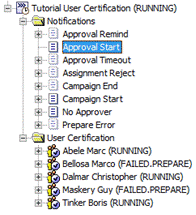
The workflow creates a new folder User Certification with a list of certification task entries: one for each user that matches the user filter configured in the campaign entry.
The Tutorial User Certification campaign entry has now changed:
In the Status tab, the State has been changed to Campaign is running (RUNNING); the campaign has been started and is not yet finished.
In the Logs tab, we see some log messages:
-
A warning for user Bellosa Marco. The Certification Campaign Controller workflow didn’t find an approver for this user and the state of the certification task is set to FAILED.PREPARE. Note that the default implementation selects the manager of a user as the approver.
-
A warning for user Maskery Guy for the same reason.
-
Because Status Expiration Date was not set at the start of campaign, a default Status Expiration Date will be calculated at the end of the campaign and will be End Date plus 30 days.
For each user, a certification task is created. By default, the workflow selects the manager of a user as the approver. Especially note:
-
The certification for Abele Marc is running correctly with Dalmar Christopher as approver, with DXR Auditors as Simple Assignments.
-
The certification for Bellosa Marco is in status FAILED.PREPARE. The reason is explained in the Log entry of the Status tab: this user does not have a manager and therefore no approver was found. To fix this problem, click the Edit button. In the Approvers list in the Approvers tab, select Hungs Olivier. In the Status tab, change the Status to RETRY.PREPARE and then click Save. Now run the Certification Campaign controller again. Certification changes to RUNNING status.
-
The certification for Dalmar Christopher is running correctly with Hungs Olivier as approver.
-
The certification for Maskery Guy is in status FAILED.PREPARE. The reason is explained in the Logs entry of the Status tab: this user does not have any manual assignments. Automatic assignments, such as inherited or obtained by provisioning rules, are not certified.
Because Notifications templates are available for this campaign, the following email notifications are sent:
-
A Campaign Start notification for the campaign owner; in our tutorial, this is Hungs Olivier. This email contains details about the campaign such as: User Filter Base, User Filter, Start Date, Due Date, and so on.
-
A No Approver notification for campaign owner; in our tutorial, to Hungs Olivier. This email informs about users without approvers; in our tutorial, Bellosa Marco and Maskery Guy.
-
Two Approval Start notifications for approvers Hungs Olivier and Dalmar Christopher. These emails contain details about the campaign and about certification tasks subjects (the users to be certified), their Attributed Assignments and Simple Assignments.
The following figure lists these notifications for Hungs Olivier:
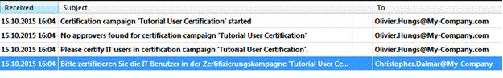
Because user Hungs Olivier has English as his preferred language (Provisioning→ Users → My-Company → Hungs Olivier → Communication → Preferred Language), notifications will be sent in English. For user Dalmar Christopher, the preferred language is set to German.
Certifying the Users
Because the campaign is in the state Campaign is running (RUNNING), you can now certify the selected users, which is to accept or reject their manual assignments. You can do this with DirX Identity Web Center or with DirX Identity Business User Interface. In the next sections, we’ll demonstrate how to use both options to perform this task. You can choose either option, but don’t perform them both.
Certifying the Users with DirX Identity Web Center
Because the campaign is in the state Campaign is running (RUNNING), you can now open Web Center to certify the selected users, which is to accept or reject their manual assignments.
One approver is Dalmar Christopher. Log in to Web Center as Dalmar Christopher with the default password dirx. The home page shows the currently running certification campaigns where Dalmar Christopher has at least one task.
-
Click Tutorial User Certification. The list of users that Dalmar Christopher needs to certify is displayed.
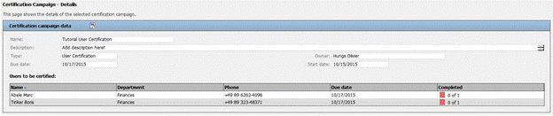
Dalmar Christopher has two certification tasks: one for user Abele Marc and one for Tinker Boris.
-
Click the Abele Marc entry. The following figure shows the result:
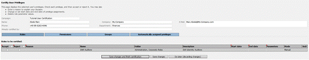
-
Check Accept and then click Save changes and finish certification.
-
For user Tinker Boris, apply the same actions: accept the current role as DXR Audit Administrator.
-
Select Accept and then click Save changes and finish certification.
Now log out from Web Center and then log in as Hungs Olivier with the default password dirx.
-
Follow the same steps as you did for Dalmar Christopher. Hungs Olivier has two users to certify: Bellosa Marco and Dalmar Christopher.
-
Ignore all the privileges for Dalmar Christopher and leave them uncertified.
-
For Bellosa Marco, reject the Test Tasks privilege and then click Save changes and finish certification.
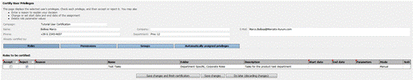
In DirX Identity Manager, check the campaign Tutorial User Certification:
-
Tutorial User Certification is in the state Campaign is running (RUNNING).
-
All approved certifications are now in the state APPROVAL.FINISHED.
-
The Maskery Guy certification is still in the state FAILED.PREPARE because there were no manual assignments to approve, and no approver assigned.
-
The Dalmar Christopher certification is in the state RUNNING because no approver performed any action for certifying this user.
Certifying the Users with DirX Identity Business User Interface
Because the campaign is in the state Campaign is running (RUNNING), you can now open Business User Interface to certify selected users, which is to accept or reject their manual assignments.
One approver is Dalmar Christopher. Log in to the Business User Interface as Dalmar Christopher with the default password dirx. The home page shows the current running certification campaigns where Dalmar Christopher has at least one task.
-
Click the My Certification widget.
-
Select Tutorial User Certification from the certification campaign lists. The list of users that Dalmar Christopher needs to certify is displayed.
-
Dalmar Christopher has two certification tasks: one for user Abele Marc and one for Tinker Boris.
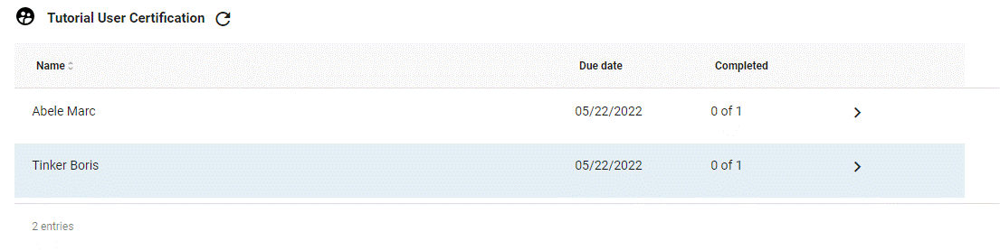
-
Click the Abele Marc entry. The following figure shows the result:
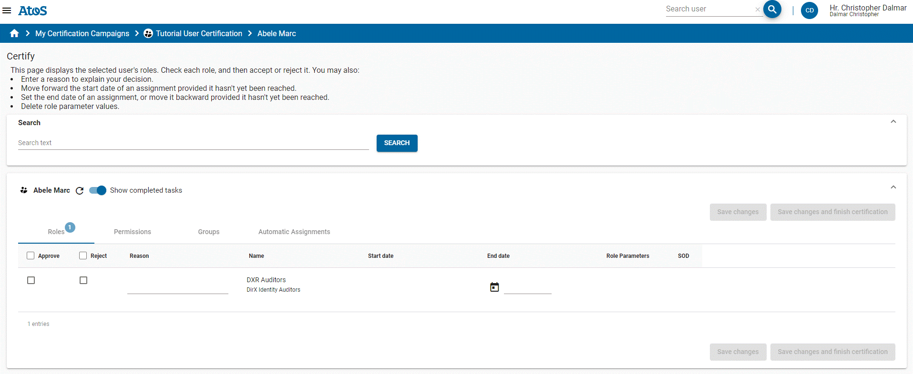
-
Check Approve and then click Save changes and finish certification.
-
For user Tinker Boris, apply the same actions: approve the current role as DXR Audit Administrator.
-
Check Approve and then click Save changes and finish certification.
Now log out from Business User Interface and log in as Hungs Olivier with the default password dirx.
-
Follow the same steps as you did for Dalmar Christopher. Hungs Olivier has two users to certify: Bellosa Marco and Dalmar Christopher.
-
Ignore all the privileges for Dalmar Christopher and leave them uncertified.
-
For Bellosa Marco, reject the Test Tasks privilege and then click Save changes and finish certification.
In DirX Identity Manager, check the campaign Tutorial User Certification:
-
Tutorial User Certification is in the state Campaign is running (RUNNING).
-
All approved certifications are now in the state APPROVAL.FINISHED.
-
The Maskery Guy certification is still in the state FAILED.PREPARE because there no manual assignments to approve, and no approver assigned.
-
The Dalmar Christopher certification is in the state RUNNING because no approver performed any action for certifying this user.
Finishing the Campaign
Now you can finish the campaign by changing the Due Date in the campaign entry (we do this because we want to finish the tutorial on the same day):
-
Go to the campaign entry Tutorial User Certification and select the Status tab.
-
Click Edit and change Due Date to today.
-
Click Save to commit the changes.
-
Run the CertificationCampaignController workflow from the Connectivity view group.
After the workflow has finished, check the campaign status. All the certification tasks should be in the state FINISHED except for the FAILED one and the certification campaign should be in the state Campaign finished successfully (SUCCEEDED).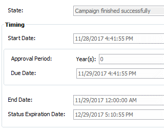
-
In the Provisioning view group, select the Certification Campaigns view and then select the campaign Tutorial User Certification.
The End Date is set to the current date.
Because we did not explicitly set the Status Expiration Date field during the campaign, the value was set by the Certification Campaign controller as End Date plus 30 days. After the campaign status expires, the campaign will be automatically moved to the Campaign is marked for deletion (DELETED) state and deleted later on by the Cleanup Objects workflow. -
Underneath the campaign container, browse to the certification for Bellosa Marco. The Approvers tab shows Hungs Olivier.
-
The Attributed Assignments tab is empty. Bellosa Marco had no assignments with either role parameters or end date.
-
The Simple Assignments tab shows that the Test Tasks role has been rejected.
-
Navigate to the user Bellosa Marco in the folder Customers → Mercato Aurum and check that the role Test Tasks has been removed.
-
Return to the Tutorial User Certification campaign and select the certification for Dalmar Christopher.
-
All assignments in the tabs Attributed Assignments and Simple Assignments are in the Not Certified list. If you check the user entry in the folder My-Company → Finances, you’ll see that all these assignments still exist. This is correct because the Revoke privileges settings field in the campaign requested to remove only the rejected assignments and leave the assignments that were not certified as they are.
Generating a Certification Campaign Report
You can produce a report at any time during a running campaign:
-
In the Provisioning view group, select the Certification Campaigns view and then browse to Tutorial User Certification.
-
Right click the campaign entry and then select Report from the context menu.
-
Select the report Campaign with all properties.
-
Set the following fields:
In Search base, select Tutorial User Certification.
In Type, select HTML.
Uncheck Output to viewer.
In Output file, select a location in which to save the report.
-
Click Run report.
-
Browse to the location where the report was saved and open the generated HTML report with your favorite web browser. You will see something like this:
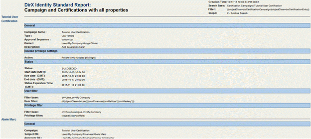
Deleting a Certification Campaign
If you do not want to wait 30 days until the campaign has expired, you can change the Status Expiration Date and let the standard workflow delete the campaign tree:
-
In the Provisioning view group, select the Certification Campaigns view and then browse to Tutorial User Certification.
-
Select the Status tab and then set Status Expiration Date to a date in the past (for example, yesterday).
-
In the Connectivity view group, navigate to the workflow CertificationCampaignController (Workflows → My-Company → Main → Identity Store) and then run it via the context menu.
-
Return to the campaign in the Provisioning view group. You’ll see that the campaign Tutorial User Certification is now in the state Campaign is marked for deletion (DELETED). This state is handled by the DirX Identity cleanupObjects workflow, which also evaluates the cleanupDeletedCertificationCampaigns rule from Provisioning → Policies → Rules → Default→ Consistency.
You have now completed the certification campaign tutorial. The last step is to reset the preferred language for user Hungs Olivier to the value you recorded before you changed it to English to avoid side-effects when running other tutorials. See the section "Starting the Certification Campaign" for instructions.
Applying Attribute Modification Approval
In this section, we’ll demonstrate how attribute modification approval works. We’ll show you how to:
-
Activate attribute modification approval
-
Modify and activate a user attribute modification policy
-
Modify user attributes that require approval and examine the effects
-
Approve the attribute modification request and check the result
Activating Attribute Modification Approval Checking
First, we’ll activate attribute modification approval checking, if necessary. For performance reasons, this feature is deactivated by default in all customer domains. We’ll activate it using DirX Identity Manager’s Provisioning → Domain Configuration view:
-
Log in to DirX Identity Manager’s Provisioning view group.
-
Click Domain Configuration → My-Company.
-
In the RequestWorkflows tab, click Edit.
-
Check Attribute modification approval, if it’s not already checked.
-
Click Save.
To make this change effective within DirX Identity Manager itself, you must stop and then restart all of your running Manager instances:
-
Click File → Exit to close your Manager instance(s).
-
Start Manager again and log in to the Provisioning view.
Modifying an Attribute Modification Approval Policy
Next, we’ll configure an existing attribute modification approval policy provided with DirX Identity in the sample domain.
The My-Company sample domain has a pre-configured attribute modification approval policy for user attributes that requires approval on changes to the attributes Location and Organizational Unit. We’ll configure and activate this policy now with DirX Identity Manager if necessary:
-
In Provisioning → Policies, click Attribute Policies → My-Company → User - Location and Organization.
-
In the General tab, click Edit, and then check Is active if it’s not already checked.
-
Click Save.
-
Click the Configuration tab. You can see the attributes that require approval listed in the Selected box. The Available box lists additional attributes you can select to require approval.
Modifying the User Attributes
Now we’re ready to test the user attribute modification policy. We’ll use Franca Baretti in Marketing as our example, and use Web Center to change her Locality and Country attributes. We’ll log in as Nik Taspatch, since he is the user administrator for the Marketing Department:
-
In an Internet browser, start DirX Identity Web Center.
-
Log in as Taspatch Nik with the password dirx.
-
In Users → Select user, enter B in Search for, and then click Search to return a list of users whose names begin with "B".
-
Select Baretti Franca from the list. Web Center displays a user summary for Franca.
-
In the Users menu, click Modify user data.
-
Change the location to My-Company San Jose in Location.
-
Click Save. Web Center displays Franca Baretti’s entry again.
Monitoring the Attribute Approval Process
We can use the Web Center to check the results of Nik Taspatch’s changes to Franca’s user attributes.
-
First note that the location in Franca Baretti’s summary page is still My-Company Rome. But the page now includes a modification order list which shows that the modification is in approval (Since it may take some time to start the approval workflow, you may have to click the Refresh summary icon in the page repeatedly before you see the item.)
-
Now click Show subscription status in the Users menu.
-
The Select a Workflow page lists a workflow for Franca Baretti with the status Running. Click it.
-
Franca Baretti’s attribute modifications require approval from a member of My-Company’s Human Resources department. In Running activities, you can see the members of this department. Only one of these members needs to approve the request.
-
There is nothing more for Nik Taspatch to do, so click Logout.
We can also use DirX Identity Manager’s Monitor View to see the progress of Franca Baretti’s attribute modification approval:
-
Log in to DirX Identity Manager’s Provisioning view.
-
Click Workflow, and then click Workflow → Monitor → My-Company → Users → Modify Location and Organization. In a production environment, this folder contains sub-folders named with dates; for example, 2024-06-12. Each sub-folder contains status information about the request workflows that have executed on these dates.
-
In our case, we have one folder with today’s date. Click this folder, and then look for Baretti Franca in the list of workflows (it should be the only one there). Click it. In the General tab, Manager displays a graphical representation of the request workflow that is processing Franca’s attribute modification approval. The step Approval of Attribute Modifications is highlighted in grey to indicate that it is the activity that is currently being processed. You can double-click this step, and then click the Status Information tab. You can see the same participant list of Human Resources members who are allowed to approve the request.
Approving the Attribute Modification Request
As mentioned before, Franca Baretti’s attribute modifications require approval from a member of My-Company’s Human Resources department. The request workflow’s approval activity will automatically notify each of these people by email about Franca Baretti’s attribute modification request. Only one of these people needs to approve the request in order for it to be successfully processed. In this topic, we’ll show how one of these people - Hans Berner - uses the Web Center to view and approve Nik Taspatch’s request. We can do this with or without email notification; it depends on how you set up email notification when you prepared to use the quick start. For this exercise, we’ll assume that email notification is off (the default). See the first exercise in this tutorial ("User Self-Registration") for more information about this feature.
To approve the request from Hans Berner’s Task list dialog:
-
Start the Web Center.
-
Enter Berner Hans in Name and the password dirx. (Remember that all persons in the sample domain are set up to have the same password.)
-
Click Log in (or press RETURN) to log in.
-
In Work List, click Task list and select the approval task. Web Center displays Franca Baretti’s data in the "Approval of Attribute Modification" dialog.
-
Enter F. Baretti transfer to San Jose, U.S. of America in Reason. (It’s good practice to provide a reason for your decision, especially if you reject a request.)
-
Click Accept to grant the request.
-
Note that Task list is now empty.
-
There is nothing more to do, so click Logout.
Checking the Result of Attribute Modification Approval
Next, we use the Web Center to check the results of the approval on Franca Baretti’s user data:
-
Enter Taspatch Nik in Name and the password dirx. Click Log in or press RETURN.
-
In Users → Select user, enter B in Search for, and then click Search to return a list of users whose names begin with "B".
-
Select Baretti Franca from the list. The Display summary page is shown. Check that the location has now changed to My-Company San Jose. Also note that country and postal address have been changed accordingly since these attributes are mastered by location.
-
Select the Groups button near the bottom of the page.
-
Check that the Windows groups and accounts have moved from Windows Domain Europe to Windows Domain US (the assignments still exist, but are in the state DELETED or DISABLED). This shows that DirX Identity automatically re-configures the IT resources that Franca Baretti requires.
-
Click the Users → Show subscription status icon in the toolbar and then click the button Succeeded Workflows. The Select a Workflow list shows the workflow for Franca Baretti with the status Succeeded. Click the workflow. The Finished activities section shows the results of the approval.
-
There is nothing more to do, so click Logout.
You can also check the results with DirX Identity Manager:
-
In the Provisioning view group, click Workflows, and then click Workflows → Monitor → My-Company → Users → Modify Location and Organization → today’s date → Baretti Franca.
-
Double-click the Approval of Attribute Modifications-0 step, and then click the Status Information tab. Here you can see that the approval request workflows for the other Human Resources members were successfully finished, since one member accepted the attribute modification.
Scheduled Privilege Assignment
Event-based privilege assignment changes access rights almost in real time and reduces time-consuming policy executions and privilege resolutions. Nevertheless, there may be reasons when these concepts are not sufficient; for example:
-
You want to run a cleanup policy execution and privilege resolution over all users from time to time to be sure that all users have the correct access rights.
-
You allow pure LDAP clients to change user entries. In this case, the service layer cannot produce events. The only way to solve this problem is to indicate the changed users by setting the dxrTBA flag (To Be Analyzed in the user interface) to TRUE and then subsequently run a scheduled or manually-triggered policy execution and privilege resolution.
In the next sections, we demonstrate the second scenario.
Disabling Event-based Privilege Resolution
Before we proceed with this exercise, we need to stop the Java-based server to disable event-based privilege resolution, which runs as a part of the event-based maintenance workflows. See the "Managing the Java-based Server" section in the DirX Identity Connectivity Administration Guide for instructions.
We must also disable the SoD flag at the domain object, otherwise privilege resolution will run automatically with policy execution:
-
Log in to DirX Identity Manager’s Provisioning view group.
-
Click Domain Configuration → My-Company.
-
In the Compliance tab, click Edit.
-
Uncheck Segregation of Duties (SoD) checks.
-
Click Save.
Performing a Pure LDAP Change
Use either a pure LDAP client or DirX Identity Manager’s Data View:
-
Click Provisioning.
-
Select the user cn=Briner Ruben,ou=Sales,o=My-Company,cn=Users,cn=My-Company.
-
Click Edit.
-
Scroll down to the employeeType attribute and change its value to Contractor.
-
Set the dxrTBA attribute to true. You can use this flag later on to indicate to DirX Identity services (policy execution and privilege resolution) that only users with this flag need to be managed (after working on these objects, the services reset the flag). If you do not use this flag, you must run the services on the entire user population, which might be a time-consuming procedure with a high load on the Provisioning configuration server.
-
Save the user object.
Check the object from the Provisioning view group:
-
Select the user Briner Ruben from Provisioning → Users → My-Company → Sales.
-
Click the General tab and then refresh the entry. The Employee Type field displays Contractor.
-
Verify that the To be analyzed flag in the Operational tab is set (this is the dxrTBA flag).
-
Check that the user has the Internal Employee role assigned; this is inconsistent with the changed employee type. To correct this problem, we run the policy execution service and a subsequent privilege resolution.
Configuring the Policy Execution Service
First, we need to configure the policy execution service with DirX Identity Manager:
-
Click Provisioning and then click Target Systems.
-
Right-click Target Systems (the top-level object in the tree) and then select Connectivity → Workflows → PolicyExecution → Configure Workflow. The workflow wizard opens.
-
Click Next. You can see that the policy execution service does not perform a privilege resolution automatically (Provisioning Mode is set to Assign Privilege only). Do not change this step. Click Next again.
-
Change Base Object to cn=Role based scenario,cn=My-Company,cn=Rules,cn=Policies,cn=My-Company if it is not already set to this value. This setting indicates that we run all policies below this node.
-
Change Search Filter to (objectClass=dxrProvisionRule) if it is not already set to this value to specify that we use only provisioning rules in this run.
-
Click Finish to close the wizard.
Running the Policy Execution Service
To run the policy execution service:
-
Right-click Target Systems and select Connectivity → Workflows → PolicyExecution → Run Workflow to run the workflow. Wait until the workflow has completed.
Using the Structure Tab to Check the Results
First we’ll use the policy execution workflow’s open window to check the results:
-
Click the Structure tab and then the activity in the middle. A new window opens. Click the Trace tab and then check the trace file (click the line and then the button to the right).
-
At the tracing level set for the workflow, the trace file contains only brief statistics. Each privilege that has been processed is listed in a table with the number of subjects processed and the corresponding errors and warnings. In this case, the privileges Contractors, Internal Employee and Signature Level 1 each have processed one subject (user). This must be our Ruben Briner, because all other users in the database were not changed, and so the policy execution service had nothing else to do.
-
Note that assignment of permission Signature Level 1 failed since we’ve stopped the Java-based server. Let’s ignore this for this tutorial chapter.
-
Close the trace window and the Policy Execution and Run Workflow windows.
Checking Ruben Briner’s Privileges
Use the DirX Identity Manager to check the result of the policy execution workflow run.
-
Select the user Briner Ruben from Provisioning → Users → My-Company → Sales.
-
Click the Assigned Roles tab and refresh the entry. The Contractor role should be visible.
-
Click the Assigned Permissions tab and refresh the entry. The Contractor permission is not yet visible because the privilege resolution service did not run. For the same reason, the Internal Employee permission is still assigned.
Running the Privilege Resolution Service
Now we’ll resolve the privileges that the policy execution service assigned to Ruben Briner:
-
Select the Target Systems view.
-
Right-click the Target Systems top-level node and select Connectivity → Workflows → PrivilegeResolution → Run Workflow to run the privilege resolution workflow. Wait until the workflow has completed.
-
Click the Structure tab to check whether the workflow has performed successfully. The workflow activity PrivilegeResolution must be displayed in green.
-
Close the Run Workflow window.
Re-Checking Ruben Briner’s Privileges
Now we return to the DirX Identity Manager’s Provisioning → Users view and examine Ruben Briner’s privileges again. In DirX Identity Manager → Provisioning → Users → My-Company → Sales:
-
Click the Assigned Permissions tab. Now the Contractor permission is visible (you may need to click the refresh button
 first).
first). -
Click the Assigned Groups tab. Several new group assignments have been created. Note that a new Contractor group is visible (Windows Domain USA) as well as the Contractor Portal group in the Intranet Portal target system.
This exercise shows how you can resolve inconsistencies in the Identity Store.
Creating a Nested Workflow
In this exercise, we show you how to create a nested Tcl-based workflow. Before you try this exercise, make sure you’ve followed the exercise described in "Importing Identities" in this Guide.
We’ll combine the run of the NewHR2Ident workflow, the policy execution service and the privilege resolution service in a nested workflow. To do this, we’ll use the DirX Identity Manager’s Expert View to copy a default workflow and move it to our NewCompany scenario and then reconfigure its activities from the defaults to the values for our scenario. Next, we’ll run and monitor the workflow from the Expert View, then make it available for execution in the Global View.
Copying and Moving a Default Workflow
First, we’ll use DirX Identity Manager’s Expert View to copy a default workflow and move it to our NewCompany scenario:
-
Click Connectivity, and then click Expert View.
-
Open Workflows → Default → Source Scheduled. The workflow ODBC2Ident+Maintenance is exactly what we need.
-
Select this object and then select Copy Object. Set the name to NewHR2Ident+Maintenance and click OK.
-
The location of the copied object is not correct. Select Move Object and set Workflows → My-Company → NewCompany → Source Scheduled → ODBC as the target. Click OK and wait until the move is performed. DirX Identity checks and adapts all references pointing to the moved object to guarantee the integrity of the Connectivity configuration, so this action requires some time.
Reconfiguring the Default Workflow’s Activities
Next, we’ll reconfigure the activities in the default workflow to point to our scenario’s objects:
-
Open the previously selected target path for the move operation. The new workflow NewHR2Ident+Maintenance is visible there.
-
Click it and open it. Three activities are visible but they point to the wrong (default) objects. Adjust them to make the workflow usable for the My-Company scenario.
-
Click the Creation Workflow activity in the left pane and then Edit. Click the last icon behind Run Object (…). A tree browser opens and you can see that this activity references the default ODBC2Ident workflow. Select Workflows → My-Company → NewCompany → Source Scheduled → ODBC → NewHR2Ident instead and click Save.
-
Click the Policy Execution activity and link it to Jobs → My-Company → Main → Identity Store → Policy Execution. Click Save.
-
Click the Privilege Resolution activity and link it to Jobs → My-Company → Main → Identity Store → Privilege Resolution. Click Save.
Running and Monitoring the Nested Workflow
Now we have a workflow that runs the ODBC creation workflow and then the policy execution and privilege resolution services. Run the new workflow from the Expert View and click the Structure tab in the run window. Watch the three activities running in sequence.
Making the Nested Workflow Available in the Global View
The last step is to make this workflow available in the Global View:
-
Click Global View and select the scenario My-Company → NewCompany.
-
Right-click the workflow line, then select Assign.
-
Select the NewHR2Ident+Maintenance workflow from the list and click OK.
Now you can run the workflow from the Global View.
If you need a new nested workflow for another identity creation workflow, simply copy this workflow and link only the first activity to the new creation workflow. It makes sense to use the same second and third activity; for example, if you need to reconfigure one of these activities, the new configuration will take effect in all nested workflows at once.
Using Manual Provisioning
There are many reasons why it is difficult or why it does not make sense to tightly integrate a potential connected system. Setting up the system for manual provisioning provides you with a quick and easy solution. In this section, we’ll show you how to do it with the example of a physical access system that is part of the DirX Identity sample domain. We’ll describe how manual provisioning works and demonstrate how to:
-
View the scenario in the sample domain
-
Request physical access to secured rooms
-
Check the approval result
-
Perform manual provisioning as an administrator
-
View the result
You can read more about this topic in the DirX Identity Use Case Document "Service Management".
Understanding Manual Provisioning
The My-Company sample domain contains the Physical Access target system, which is an example of an offline target system. With an offline system, there is no direct connection for provisioning. Instead, the target system administrator is notified by request workflow activities that he needs to synchronize the external offline system with the target system’s content.
Manual provisioning requires configuration in both the Connectivity and Provisioning views and consists of the following steps:
-
Creating a new target system of type RequestWorkflow in the Target Systems view that reflects your offline system that is to be manually provisioned. This step adds the necessary Java-based workflow that starts the corresponding request workflow for each change to the target system.
-
Setting up the necessary groups in your target system or loading them from the offline system.
-
Copying the provided request workflow template, modifying it to your requirements and then configuring the Java-based workflow you copied to use this request workflow definition.
These steps have been completed for the Physical Access target system. You can use this prepared example to run this exercise.
Viewing the Scenario
In our scenario, the Physical Access target system controls access to protected rooms in the following locations:
-
A documentation archive in Munich
-
Three data center rooms in Berlin, Frankfurt and Munich.
Roles and rules protect the access to these rooms.
Viewing the Target System
First we view the target system Physical Access.
-
Log in to the Provisioning view group of the DirX Identity Manager.
-
Select the Target Systems view and navigate to the Physical Access target system.
-
In the General tab, you can see that the target system type is RequestWorkflow. This assignment means that it is configured and tailored to be used with real-time workflows that start request workflows. These request workflows can be used for manual provisioning. To create another instance of this type of target system, select the type Service Management in the target system wizard.
-
Click the Advanced tab. This target system works with assignment states and references groups from the account side. This is important because then all changes for attributes and group memberships are stored at the account. Real-time provisioning is enabled and password synchronization is disabled. Synchronizing passwords does not make sense because the administrator would potentially know all passwords of all users.
-
Open the tree. You can see a folder with a set of accounts and a folder with four groups: Munich - Archive protects the documentation archive and the three Data Center groups protect the data centers in Berlin, Frankfurt and Munich. Note that all these groups are not user assignable.
Viewing the Privilege Structure
Next, we evaluate the privilege structure.
-
Select the Privileges view.
-
Navigate to Roles → Corporate Roles → Physical Access. This folder contains four roles that are each linked to the corresponding permission (view the Assigned Permissions tab). These roles are all user assignable.
-
Navigate to Permissions → Corporate Permissions → Physical Access. This folder contains four permissions that are linked to the four groups in the target system (view the Assigned Groups tab). Note that the permissions are not user assignable.
The role administrator has decided that only roles can be assigned to users. Assignment of permissions and groups is not possible.
Viewing the Rules
The sample scenario assumes that users located in Berlin, Frankfurt and Munich get automatic access to the data center rooms. Access to the archive requires explicit role assignment as well as access to the data center rooms for persons outside the three mentioned locations.
-
Select the Policies view.
-
Navigate to Rules → My-Company → Role based scenario → Corporate.
-
View the three rules for access to Data Center. They assign all internal employees of the specific location to the corresponding group.
These rules are either executed during a policy execution service run or during an event-based user processing workflow.
Requesting Physical Access
In our example scenario for manual provisioning, Bill Sedran, the head of software development in San Jose, frequently visits the My-Company’s Munich branch and needs access to the Munich Archive when he’s there. He requests the necessary role via Web Center.
Requesting Access to the Munich Archive
To launch the access request for the Munich Archive:
-
Log in as Sedran Bill into Web Center.
-
Select Self Service → Subscribe privileges and click Search.
-
Click the Munich - Archive role, move it to Assigned roles and then click Save.
-
Select Self Service → Show Subscription Status. A new line with the pending approval is shown.
-
Click the line to open the details. You can see that Olivier Hungs, Gabriela Morton (the role’s owners) or Christopher Dalmar (Olivier’s representative) are required to approve the assignment in Approval by Privilege Managers activity. The Approval by User Manager activity must be approved by Frederic Duplan (Bill’s manager) or by Veronique Cohu (Frederic’s representative).
-
Log out from Web Center.
Approving the Access Request
All of the approvers have received an email message that requests that they approve the role assignment.
-
Log in to Web Center as Hungs Olivier.
-
Select Work List → Task list and approve the subscription with the reason "As discussed with Dalmar Christopher".
-
Log out from Web Center.
-
Log in as Duplan Frederic into Web Center.
-
Select Work List → Task list and approve the subscription with the reason "Necessary according to Bill Sedran’s work profile".
-
Log out from Web Center.
Checking the Approval Result
Now that approval is complete, we can check the result in various places.
Checking the Request Workflow Result
First, we’ll check the approval result in the Workflows view:
-
Open DirX Identity Manager (Provisioning view group).
-
Click the Workflows view.
-
Navigate to Monitor → My-Company → Approval → 4-Eye Approval → date → Sedran Bill → Munich - Archive.
-
Click the General tab. In the structure view, you can see that both approvers have accepted and the Apply Approved Privilege Change activity has succeeded. In this step, privilege resolution was performed that created a new account for Bill Sedran and that was assigned to the Munich - Archive group in the Physical Access target system.
Viewing the New Account and Group Membership
Now let’s view the new account and group membership information in the Physical Access target system:
-
Click the Target Systems view.
-
Navigate to Physical Access → accounts and open this folder.
-
Click the Bill Sedran account.
-
View the Operational tab. You can see that the account is in state ENABLED but the target system state is still in state NONE which means that it is not yet created in the connected system.
-
Click the Member of tab. The assignment state for the Munich - Archive group is ADD which also means that the assignment is not yet provisioned.
Viewing the Real Time Workflow
Next, we’ll check the real time workflow that results from the approvals:
-
Open DirX Identity Manager (Connectivity view group).
-
Click the Monitor View.
-
Navigate to My-Company → Main → Target Realtime → Physical Access → Ident_PhysicalAccess_Realtime. You can see one instance of the workflow.
-
Click the instance and view the Remark field. There could be a message that indicates that a request workflow was started to request manual provisioning:
Creation request workflow for object "cn=Bill Sedran 4365,cn=accounts,cn=Physical Access,cn=TargetSystems,cn=My-Company" successfully instantiated.
Viewing the Request Workflow Instance
Now let’s check the request workflow instance (created by the previous real time workflow):
-
Open DirX Identity Manager (Provisioning view group).
-
Click the Workflows view.
-
Navigate to Monitor → My-Company → Service Management → Physical Access → date. One request workflow instance is present.
-
Click the instance. You can see that one instance waits in the activity Addition by Administrator. Double-click the activity and view the approver in the Status Information tab. Retha Wagner - who is the Local Admin of the Physical Access target system - is responsible for acting on this workflow.
-
Click the Object tab of the workflow. You can see all attributes of the new account (this is technically the order information). We will see that this information is sufficient for the administrator to create the account in the Physical Access offline system.
The order information in the Object and Assignment tabs is used to create the necessary information in the corresponding Web Center pages.
Performing Manual Provisioning
In our sample scenario, we assume that an administrator of an offline target system does not receive an email message when a new provisioning request is produced. As a result, the approval activities of the Physical Access request workflow are not configured for email. Look-up the definition of the workflow in the path Definitions → My-Company → Service Management → Physical Access. For our scenario, we assume that Retha Wagner works frequently in her work list.
-
Log in to Web Center as Wagner Retha.
-
Execute Work List → Task list from the menu bar.
-
You can see a work item that requests the account creation.
-
Click the item to view the details (Addition by Administrator). It shows that an account for Bill Sedran is to be created and added to the Munich - Archive group. All of the required attributes are shown.
Note that these attributes are defined in the mapping of the corresponding real-time workflow. So you can add or remove attributes as they are needed. You can also define the sequence of the attributes in the mapping definition. -
Retha now must open the administrative interface to the Physical Access system and add the account as requested. After successful creation, she can add a reason and then click Accept. If she wants to do the task later, she can press Do later. Clicking Reject means that she cannot do the task. In this case, it makes sense to add a reason. This action only sends a notification to the user that the task failed. The DirX Identity target system and the external system are not in sync which is visible because the target system state is still NONE.
-
We assume that Retha can add the account to the Physical Access system, so we acknowledge it by clicking Accept.
-
The work list is now empty.
The manual provisioning scenario assumes that the administrator works carefully and correctly. Nevertheless, errors are possible. To solve this problem, build a mechanism such as a file-based workflow that validates the content of the external system from time to time against the target system. Then the differences are visible and the administrator can address them.
Viewing the Result
In the previous sections, we learned how manual provisioning is to be done. This section completes the topic by viewing the result in various ways.
Viewing the Provisioned User
First, let’s view Bill Sedran’s account and group membership from his perspective:
-
Log in to Web Center as Sedran Bill.
-
Perform Self Service → Display summary from the menu bar.
-
Click the Accounts button. The target system state of the account in the Physical Access target system is ENABLED.
-
Click the image at the end of the account line to display the assigned groups. Verify that the assignment state is ENABLED.
Viewing as the Administrator
Next, we’ll view the account and group membership from the target system administrator’s perspective:
-
Log in to Web Center as Wagner Retha.
-
Perform Accounts → Select account from the menu bar.
-
Type in "Bill" into the search field (begins with). Click Search.
-
In the displayed account table, click the account for the Physical Access system. All attributes are displayed and also the group membership.
-
Click the button at the end of the group line to display the group.
-
Select Groups → Show members to display the group members.
Checking Statistics on Groups
Finally, we’ll run a report on group statistics to check the effect:
-
In Web Center, select Tools → Reports.
-
Navigate in the tree to Target Systems → Physical Access and then click it. A set of possible reports is displayed.
-
Click Number of users per group. After a few seconds, the list of groups is displayed. The second column displays all users that are directly assigned to the groups via the provisioning rules. The first column also shows the indirectly assigned users, which are users assigned via roles or permissions. There’s only a difference for the Munich - Archive group.
Working with Internal Tickets
In most cases, you want changes in your identity solution to be effective immediately in real time. However, there are situations where it makes sense to delay changes to a later date. If you have no way of delaying these changes, you have to note the changes somewhere, wait until the time comes and then perform the changes.
Of course this procedure is very inconvenient. You can use DirX Identity’s internal service management component to manage these situations.
In this section, we’ll show you how to create and manage tickets in DirX Identity. First, we explain how you can work with internal tickets and then we demonstrate how to:
-
Create tickets
-
View tickets
-
Process tickets
-
View the processed ticket and its results
For more information about this topic, read the DirX Identity Use Case Document about "Service Management".
Understanding How to Work with Internal Tickets
Creating tickets in DirX Identity is easy. Perform your action as usual and then set a due date with Web Center or DirX Identity Manager. The action is not performed immediately, but at the required due date. DirX Identity supports the following types of actions:
-
Creating objects
-
Modifying objects
-
Deleting objects
-
Assigning privileges
-
Removal of privileges
A ticket processor needs to run daily to process all maturing tickets. Depending on the action to be processed, corresponding approval workflows and their results must be handled.
In this follow-on tutorial, we modify a user while setting a due date, process the ticket and view the results.
Creating a Modification Ticket
We assume that Leo Kubalke from the Product Testing group is to receive his doctorate on the date that he defends his thesis. After that date, he’d like to add his new title to his company name information.
For purposes of this exercise, we need to set today’s date as the due date, or the ticket processor won’t run and we can’t perform the whole tutorial on one day. Note also that we use the DirX Identity Manager for this tutorial.
To prepare for the upcoming name change:
-
Login to the Provisioning view group of the DirX Identity Manager.
-
Click the Users view and then navigate to Users → My-Company → Product Testing.
-
Select Leo Kubalke and then click the General tab.
-
Click Edit and enter Dr. into the Title field.
-
Enter today’s date into the Due Date field (to the left of the Save button).
-
Click Save.
After a short time, the Title field is cleared, which means that the change is not yet effective.
Viewing the Modification Ticket
Now we’ll explore several ways to view the upcoming change.
First we’ll check the information at the user entry:
-
If not yet done, click the entry of Leo Kubalke.
-
Click the Orders tab. If it is still empty, perform a refresh (on Windows: F5). Be patient until the data appears.
-
You can see the order with the due date (the current date), the attribute name title, the empty old value and the new value 'Dr.'.
Additionally you can view the ticket:
-
Select the Tickets view.
-
Navigate to Tickets → Internal → Users → date → Kubalke Leo time and click this entry.
DirX Identity stores all of its self-created tickets in the tree Internal. The next level divides the object types, in this case we have a Users folder. Below this folder you can find a folder for each date (this is the due date). This allows easily finding out all tickets that are valid for a specific date and you can also see that for a specific date no tickets exist if the corresponding folder is missing. -
In the General tab of the ticket, you can see the Name (Kubalke Leo time), the Object type (here dxrUser) and the Operation (here MODIFY). The creator of this ticket is shown as the Owner (in this case the Domain Admin). The Subject field shows the DN of the object the ticket is valid for. Because the Request workflow field is empty, there is no related approval in progress.
-
Check the Status Information tab. The Status field shows Input.Completed, which means that the ticket is ready to process. You can also see the Due date here. The Expiration date and Delete date are still empty. If any errors occur, for example, during ticket processing, the Error field shows this information.
-
In the Object tab, you can find the order (the change definition) for the object itself (for the subject). It is identical to the previously viewed Orders tab at the user entry.
-
Click the Assignments tab to see that this ticket does not have any assignment order.
Use query folders to explore and manage the ticket tree. Especially if you have many tickets, these queries help a lot. If the provided default queries are not specific enough, set up your own queries but first let’s use some of the default queries:
-
Open the _Queries folder. At the top level, you can find a set of general queries.
-
Click Active Tickets to see our active ticket for Leo Kubalke.
-
Because there are no error tickets, clicking Error Tickets does not show any entries.
-
Click the Variable Time Constraint query. A dialog appears that shows by default a three-hour time period for modifications and creations. You could change these values, but in this case, we accept them and simply click OK. Again we can see the Leo Kubalke entry.
-
There are some additional folders that help to evaluate specific types of tickets. Open For Object Types and click Users. Our entry is shown again.
-
Opening For Operation Types and clicking Modify reveals the same entry.
-
Now open For Status and click Input.Complete to see the same entry.
These examples show that there are many ways to view and explore tickets.
Processing the Modification Ticket
In this step, we’ll process the previously created ticket.
-
Login to the Connectivity view group of the DirX Identity Manager.
-
Click Global View and then navigate to My-Company → Main.
-
Click the line between the two Identity Store icons and select Process Internal Tickets → Configure from the context menu.
-
Click through the two tabs. There is nothing interesting to see besides the fact that this workflow runs with Resource Family Event_Maintenance, which means it runs in the Java-based server and does not run as an external executable in the C++-based server.
-
Now run the workflow (select Process Internal Tickets → Run from the context menu.
The workflow runs and we can view the result.
Typically you should set up a schedule for this workflow to run it overnight on a daily basis. This configuration guarantees that all mature tickets are processed. Each day, you should check to see if any errors occurred. Use the Error Tickets query to perform this task.
Viewing the Modification Ticket Result
Now we’ll see if the user entry has changed:
-
Log in to the Provisioning view group of the DirX Identity Manager.
-
Click the Users view and then navigate to Users → My-Company → Product Testing.
-
Select Kubalke Leo and click the General tab. You should see the value Dr. in the title field. This shows that the ticket was processed.
-
Click the Orders tab. The tab is empty.
Now we check the ticket itself:
-
Click the Tickets view.
-
Navigate to Tickets → Internal → _Queries and then click the Processed Tickets query.
-
The Kubalke Leo ticket is found.
-
Click the Status Information tab.
-
The Ticket state is now ApplyChange.completed and the Delete Date is set to one month later.
Where does this one month value come from?
-
Click the Domain Configuration view and then the top-level object with the name of your domain.
-
Select the Timing tab.
-
In this tab, you can find global settings for the Ticket life time of successfully processed tickets and erroneous tickets.
Working with Source Tickets
Many customers have already service management systems (ticketing systems) in place to manage and control IT processes. Users open tickets that allow them to get access to specific resources. These processes are well-known and thus hard to change. When introducing an identity management system into this environment, it makes sense to connect it to these ticketing systems to allow for seamless integration with existing processes.
In this section, we’ll show you how to integrate a ticketing system with DirX Identity’s provisioning mechanism via a sample web service. First, we explain how you can work with source tickets and then we demonstrate how to:
-
Prepare the web service environment.
-
View the ticket request.
-
Send the ticket.
-
Watch the ticket workflow.
-
Check the ticket status.
-
Approve the Manager Analyst Relations role.
-
View the request workflows.
-
Check the final ticket state.
For more information about this topic, read the DirX Identity Use Case Document Service Management.
Understanding How to Use Source Tickets
Tickets from source ticketing systems (service management systems) that are related to identity management can comprise various issues:
-
Creation of a new user optionally with already assigned privileges.
-
Modification of a user, which means either attribute changes or changes of the assigned privileges.
-
Deletion of users.
-
Creation, modification and deletion also apply for other object types like roles, permissions or groups.
Configuration of this feature includes these issues:
-
Setting up a Web service that is derived from the delivered sample web service that consumes tickets, converts them to Identity internal order representation and starts with that order the corresponding request workflow.
-
Copying the provided ticket processing request workflow and adapting it as required. You can set up one or more of these request workflows for each type of object.
These steps have already been performed in the My-Company sample domain. You can use this prepared example to run the following tutorial. You can find more information about source ticketing in the DirX Identity Use Case Document "Service Management".
For purposes of this exercise, we assume that My-Company has a service management system in place that manages contractors. This system was connected to DirX Identity via web services. If a new contractor is hired, the hiring information goes through a process in the service management system and a ticket is then created that is consumed and processed by the DirX Identity sample Web service. In our example, the My-Company division in Ottawa, Canada needs help in the professional services area. So they hire the famous Irwin Dough as a contractor. Because the tasks are well-understood, the user is created together with two role assignments: Manager Analyst Relations and My-Company Newsletter. A ticket request workflow is started that implements the user and his privileges automatically.
Preparing the Web Service Environment
DirX Identity comes with a sample ticket web service server and client. To set up the sample web service:
-
Copy the complete folder Additions\ServiceMM\WorkingWithSourceTickets on your DVD to any location on your machine (for example C:\SampleTicketWS).
-
Make sure your PATH variable is set appropriately to find the correct version of the program java.exe.
-
Start the sample ticketing Web Service. There are two possibilities:
-
Starting the Web Service as stand-alone application
-
Deploying the Web Service into Tomcat
-
The Web Service is then accessible via an URL of the form
http://*host:*port*/sourceTicketing/sourceTicketingService*.
Starting the Web Service as Stand-alone Application
Run the file runServer.bat to start the sample ticket web service server. The server runs stand-alone and does not require any other environment. The default parameters assume that the web service is accessible via host=localhost and port=40099. It is also assumed that the Java-based server is accessible via host=localhost and port=40000.
Note: If you want to use other parameters, read the DirX Identity Use Case Document "DXI Service Management.pdf".
Deploying the Web Service into Tomcat
Perform the following steps to deploy the Web Service into Tomcat:
-
Copy the sourceTicketing.war file to tomcat_install_path*/webapps*.
Tomcat will automatically detect it and deploy it to tomcat_install_path*/webapps/sourceTicketing*. -
Check the request workflow service connection parameters in the file config.properties of the folder tomcat_install_path*/webapps/sourceTicketing/WEB-INF/config*.
-
If necessary, correct them and restart Tomcat. The web service is accessible through the Tomcat host and port. This is the recommended approach for productive environment.
Preparing the Sample Web Service Client
In this tutorial, we use a pre-configured Web Service client that is easy to use. It reads a request file and sends it to the sample Web Service server. To set up the sample Web Service:
-
Check the setting of the variable ENDPOINT in the file seturl4client.bat regarding the port number. The file shipped with the product is correct if the related port is 8080. If the correct port is not 8080, then the setting must be corrected so that it contains the correct port - either the port used when starting the service via runServer.bat or the actual Tomcat port, respectively.
Viewing the Ticket Request
The sample ticket web service that is delivered with DirX Identity can consume various ticket requests for different types of objects. It is similar to SPML but simplified and thus easier to handle. To learn more about the sample web service, read the corresponding chapter in the DirX Identity Integration Framework Guide.
To understand the details of the request we use in this tutorial, open the file CreateUserWithRoles.xml from the folder C:\SampleTicketWS\sampleTickets and view it:
-
The request contains a requestID (value Request-1) that is important because you need it later on to refer to the sent request if you request the status of it. Typically this ID is generated by the generating service management system or it is equal to the ticket number in that system.
-
The spml:identifier is of type DN and defines the object to create with its path:
cn=Irwin Dough,ou=Professional Services,o=My-Company,cn=Users,cn=My-Company -
The spml:operationalAttributes section defines operational attributes:
directoryType=dxrUser - defines the object type to create. This information is used to find the correct ticket workflow via the When Applicable section.
operation=CREATE - specifies the operation to perform on this object.
creator=cn=DomainAdmin,cn=My-Company - sets the initiator of the workflow. You can use it in the When Applicable section. -
The spml:attributes section allows specifying all attributes of the user to create as there are for example the cn, objectClass, sn, givenName. You can also set links to other objects, for example manager, dxrLocationLink, dxrOrganizationLink, dxrOULink.
Note that we cannot set the dxrOULink to Professional Services because this would assign the Sales Task role to the user. This role includes SAP relevant groups that cannot be synchronized because the SAP R/3 system is not physically connected. This would cause ticket workflow that cannot end successfully. -
Use the spml:addPrivilegeAssignment section to specify the privileges to add together with the user creation. In this case, we add two roles: Manager Analyst Relations and My-Company Newsletter. The first role must be approved later on, which is not visible here. Of course we could specify time restrictions or - if the role requires it - role parameters. But we keep it simple here. Check the other sample requests delivered with the product to see all features of this sample web service.
Next, we will send this request to the sample web service server.
Sending the Ticket
To send the ticket, use the prepared batch file and perform these steps:
-
Double click the batch file CreateUserWithRoles.bat to run it. The client sends the XML request to the sample web service which starts a request workflow. This requires some seconds. Be patient.
-
A log file CreateUserWithRoles.log is written. Open it to see the result:
CreateUserWithRoles.id=Request-1 Connecting to http://localhost:8080/sourceTicketing/sourceTicketingService CreateUserWithRoles.result=URN_OASIS_NAMES_TC_SPML_1_0_SUCCESS CreateUserWithRoles.correlationId=141cb8e7b72$7bcc
The third line shows that the request ended with SUCCESS.
The fourth line delivers the internal correlation ID that can be used for status requests alternatively to the request ID.
If everything worked as expected, we can view the resulting ticket workflow.
Watching the Ticket Workflow
The sample ticket web service evaluates the incoming tickets and starts the request workflow that fits best. Perform these steps to view and monitor the workflow:
Log in to the DirX Identity Manager’s Provisioning view group.
Select the Workflows view and navigate to Monitor → My-Company → Service Management → Process Ticket → date → Irwin Dough.
Click the General tab to view the workflow progress.
-
You can see Add attributes and Apply order steps that are already completed. The sample web service converted the ticket into an Identity order that was passed to the ticket request workflow.
-
The first activity Add attributes added two fixed value attributes. To understand this, navigate to the workflow definition:
Definitions → My-Company → Service Management → Process Ticket. -
Open this entry, click the Add attributes activity and then click the Parameters tab. You can see that the attribute employeeType is set to "Contractor" and the dxmOprMaster attribute to "Service Management".
-
Check the result in the workflow instance: click the Object tab. You should see all attributes from your ticket definition and additionally the two attributes that were set by the Add attributes step.
-
Click the Assignments tab. Here you should see the two requested assignments from the ticket definition.
-
The second activity Apply order performed a sequence of steps:
-
It created the user in the Identity Store at the requested location. Check that the user exists (Users → My-Company → Professional Services → Irwin Dough). Step through the tabs to verify that the attributes were correctly set. You can see that many attributes were set automatically through attribute mastering from the business object Location.
-
It performed a privilege resolution. Check the Assigned Roles, Assigned Permissions, Assigned Groups and Accounts tabs to see the result.
-
One role was assigned automatically and is already resolved (Contractor role via rule).
-
The role My-Company Newsletter was resolved immediately because it is not flagged for approval.
-
The role Manager Analyst Relations requires approval. Thus an approval child workflow was started from the parent (ticket) workflow.
-
-
You can check this workflow either directly under Monitor → My-Company → Approval → 4-Eye Approval → date → Irwin Dough→ Manager Analyst Relations or you can use the parent workflow as starting point.
-
Click the parent workflow instance again and then select the Child Workflows tab. You can see the started child workflow as a line in the table. Note that State and ApplicationState are empty for child workflows not yet finished. Click the line and then the icon right beside the table. The Manager navigates to the child workflow instance. You can view it and then return to the parent workflow (use the arrow button of the manager).
-
We check the configuration of the Apply order activity to understand the settings in more detail. Click this activity in the workflow definition and select the Parameters tab. The meaning of the flags is:
-
If Apply Subject Order is flagged, the activity analyzes the order and creates or modifies the object.
-
If Track Changes is checked, all account and group relevant changes that are caused by this activity are stored in a list of provisioning changes that can be used later on by the Wait for completed provisioning activity.
-
If Track Changes in Child Workflows is checked, then child workflows get the Track Changes flag checked. This setting forces the child workflow to propagate the list of provisioning actions to its parent. This means that the parent has a consolidated list of all changes that a Wait for completed provisioning activity can use.
-
Before we perform the pending approval task, we check the ticket status via the web service.
Checking the Ticket Status
Meanwhile, a user in the ticket system wants to know whether the ticket is processed. Regardless of how this is done, the ticket system has to send a status request to DirX Identity. You can simulate this procedure.
First, we view the status request:
-
Open the file sampleTickets/CheckStatus.xml for editing.
-
Change the status request so that the operational attribute correlationID is exactly the correlation ID of the response that was received from CreateUserWithRoles.xml request. The correct value is the value of CreateUserWithRoles.correlationId from the file CreateUserWithRoles.log.The correlationID is the identifier of the workflow.
-
Remove the xml-comment characters which enclose the operationalAttributes section. This ensures that the status is checked first via correlationID and then via requestID as fallback.
-
If not yet done, change the requestID value so that it is checkStatus-1 instead of Request-1. This way, the status request will only be successful in case of a correct correlationID in the request.
-
Save the file.
Now we can start the status request.
-
Run the prepared CheckStatus.bat batch file.
Check the result:
-
View the CheckStatus.log file.
CheckStatus.id=Request-1 Connecting to http://localhost:8080/sourceTicketing/sourceTicketingService CheckStatus.result=URN_OASIS_NAMES_TC_SPML_1_0_PENDING CheckStatus.correlationId=141cb8e7b72$7bcc
-
You can see the request ID in the first line. The third line shows the status: PENDING. This indicates that the ticket processing in DirX Identity has not yet completed.
-
The correlation ID in the fourth line is the internal ID of the ticket in DirX Identity.
The response result can be used by the ticket system to present the associated information to the end user.
Checking the Ticket Status by Request Identifier
In a scenario where a ticket client is able to send tickets with unique identifiers for the requestID parameter, the status can be checked by this request identifier. You can simulate this procedure.
First, we view the status request:
-
Open the file sampleTickets/CheckStatusByRequestID.xml.
-
Note that the value for requestID is the same as for sampleTickets/CreateUserWithRoles.xml. Close the file.
Now we can start the status request:
-
Run the prepared CheckStatusByRequestID.bat batch file.
Check the result:
-
View the CheckStatusByRequestID.log file:
CheckStatus.id=Request-1 Connecting to http://localhost:8080/sourceTicketing/sourceTicketingService CheckStatus.result=URN_OASIS_NAMES_TC_SPML_1_0_PENDING CheckStatus.correlationId=141cb8e7b72$7bcc
-
You can see the request ID in the first line. The third line shows the status: PENDING. This indicates that the ticket processing in DirX Identity has not yet completed.
-
The correlation ID in the fourth line is the internal ID of the ticket in DirX Identity. You could use it alternatively to request the status, see the section "Checking the Ticket Status" above.
The response result can be used by the ticket system to present the associated information to the end user.
Approving the Manager Analyst Relations Role
Now we have to approve the pending Manager Analyst Relations approval workflow.
-
Log in to Web Center as Benetton Gianfranco.
-
Click Work List → Task list and click the relevant item.
-
Enter a reason and accept the request.
-
Log out and log in again as Bellanger Lionel.
-
Click Work List → Task list and click the relevant item.
-
Enter a reason and accept the request.
-
Log out of Web Center.
Next, we’ll view the status of the request workflows.
Viewing the Request Workflows
First we check the completed approval workflow:
-
Log in to DirX Identity Manager.
-
Select the Workflows view.
-
Navigate to Monitor → My-Company → Approval → 4-Eye Approval → date → Irwin Dough → Manager Analyst Relations.
-
Click the General tab and verify that the workflow is completed. The Apply Approved Privilege Change activity is green.
Because the Track Changes flag was set for this child workflow from the parent workflow, the child workflow propagated the completion to the parent workflow. We can see the result in the ticket workflow:
-
Select the Request Workflows view and navigate to Monitor → My-Company → Service Management → Process Ticket → date → Irwin Dough.
-
Click the General tab. The Wait for child workflows activity is green (successfully completed) and the Wait for completed provisioning activity is either in progress or also green (successfully completed). If not, wait until the activity and the workflow are complete.
The last step checked every minute that all states of all relevant accounts and groups have changed as expected. This means that provisioning was performed correctly.
Checking the Final Ticket State
Meanwhile, a user in the ticket system wants to know the status of the ticket, so we need to send another status request.
-
Run the prepared CheckStatus.bat batch file again.
Check the result:
-
View the CheckStatus.log file:
CheckStatus.id=Request-1 Connecting to http://localhost:8080/sourceTicketing/sourceTicketingService CheckStatus.result=URN_OASIS_NAMES_TC_SPML_1_0_SUCCESS CheckStatus.correlationId=141cb8e7b72$7bcc
-
The third line shows that the ticket could be processed correctly.
The response result can be used by the ticket system to present the associated information to the end user. The ticket was correctly and completely implemented.
Managing Personas
Personas are special representations of one real identity. To understand the concept of personas you should be familiar with chapter "Managing Personas" in the Provisioning Administration Guide.
In this section, we show you how to:
-
Enable persona management.
-
Create and view personas in Web Center.
-
Prepare the persona environment.
-
Create a persona from a non-primary account.
Note that the professional license is required to use persona management.
Enabling Persona Management
To enable persona management:
-
In DirX Identity Manager, select Domain Configuration of the Provisioning domain.
-
In the General tab, check Enable Persona Handling if it’s not already checked.
-
Save the update and then re-start the IdS-J service, Apache Tomcat, and DirX Identity Manager so that enabling persona management takes effect.
Handling Personas in Web Center
This part of the exercise demonstrates how to handle personas in Web Center.
Creating a User’s Main Identity
To create a user’s main identity, you simply create a user. We create the user John Smith, who will act as the main identity in our tutorial:
-
Log in to Web Center as Taspatch Nik.
-
From the Users menu, select the operation Create new user.
-
Select the workflow Create a user stepwise without approval. The Enter Attributes dialog appears.
-
Select the folder Users → My-Company → Sales → Sales Europe.
-
Specify the following data for John Smith in the fields provided:
Last Name: Smith
First name: John
Description: Main identity for persona tutorial
Employee type: Internal
Employee number: EN-7716
Location: My-Company London
Manager: Richter Sven
Company: My-Company
Organizational unit: Sales
Phone: +44 324 234-6944
E-Mail: John.Smith@My-Company.com -
Click Save to submit the data. The Request Privileges dialog is displayed.
-
Assign the role Internal Employee and then click Save to submit the data.
-
The workflow now creates the new user John Smith.
Verifying John Smith’s Main Identity
To verify John Smith’s main identity:
-
In Web Center, search user Smith John.
-
In the search result table, click on John Smith’s name to display the overview page.
-
Verify whether the data you entered are correct.
Creating a Persona for John Smith
John Smith will work for a specific time-period for My-Company in Houston, USA. Therefore Nik Taspatch creates a persona for John Smith. John Smith’s user entry acts as template for the persona entry to be created:
-
In Web Center, select user John Smith.
-
From the Users menu, select the operation Create new persona.
-
Select the workflow Create a persona stepwise without approval. The Enter Attributes dialog appears.
-
The folder Sales Europe, Sales, My-Company, Users is pre-selected. Last name and first name are initialized with John Smith’s data.
-
Specify the following data for John Smith’s persona in the fields provided:
Description: Persona for John Smith’s location in USA
Employee type: Internal
Employee number: EN-7716
Location: My-Company Houston
Manager: Richter Sven
Company: My-Company
Organizational unit: Sales
Phone: +1 214 324-46387
E-Mail: John.Smith@My-Company.us -
Click Save to submit the data. The Request Privileges dialog is displayed.
-
Assign the role Internal Employee and then click Save to submit the data.
-
The workflow now creates the new persona John Smith.
Viewing John Smith’s Main Identity and Persona
In Web Center, specify Smith in the quick search panel and press Enter.
In the search result table, the user Smith John and his persona Smith John Psn are displayed. The table displays the phone numbers of the user and his persona.
Double-click the persona entry in the table to display the persona overview page. It turns out that the user’s email address is displayed instead of the specified value.
The main identity is displayed on the bottom of the overview page (in the references block). Clicking the name (Smith John) displays the main identity’s overview page.
Clicking Personas shows the list of all personas assigned to the user. Clicking on the icon at the right in the table displays the persona’s overview page.
Clicking Accounts on the persona overview page displays two accounts: one in the Intranet Portal and one in the Windows Domain USA.
So, with his identity and with his persona, John Smith now has accounts in Windows Domain Europe and in Windows Domain USA, and he is able to work at both locations.
The search result illustrates that there are the following problems:
-
The persona’s email address is overwritten with the user’s data.
-
The create workflow can be optimized.
Therefore you must change the configuration to prepare DirX Identity for using persona functionality. The following sections describe this task.
Preparing the Persona Environment
We assume that the main identity only has personas that have the same employeeType, employeeNumber and company as the main identity.
This assumption and the evaluation from the sections above result in the following requirements:
-
The persona’s email address can be different from the user’s email address.
-
The user’s main identity serves as a template for the persona. It inherits the attributes employeeType, employeeNumber and company. In the create persona dialog of Web Center, these attributes must be initialized with the values of the main identity and be read-only.
-
The persona’s common name is built according the rule:
cn=sn givenName employeeNumer P
for example, Smith John EN-7716 P.
Starting with the user’s second persona, a counter is appended to the common name; for example, Smith John EN-7716 P1 for John Smith’s second persona.
To satisfy these requirements, you must modify object descriptions and Java scripts in the domain configuration with DirX Identity Manager and a properties file of Web Center. The following sections provide details about these modifications.
Modifying the PersonaCommon.xml Object Description
Recall from "Preparing the Persona Environment" that:
-
The user’s main identity inherits the values of employeeNumber, emplyeeType and organization to the persona.
-
The user’s main identity does not inherit the email address value.
In the PersonaCommon.xml object description, the master="owner" attribute specifies the inheritance of property values. To remove this attribute for the email address and add this attribute for the attributes employeeType, employeeNumber and company:
-
Log in to DirX Identity Manager → Provisioning.
-
Select the Domain Configuration view.
-
Edit the PersonaCommon.xml object description under My-Company → Customer Extensions → Object Descriptions.
-
From <property name="mail" … />, remove master="owner" to disable the inheritance of the user’s email address to the persona.
-
To the property descriptions of employeeType, employeeNumber and company add master="owner":
<property name="employeeType" ... master="owner" /> <property name="employeeNumber" ... master="owner" /> <property name="dxrOrganizationLink" ... master="owner" />
to enable inheritance from the user. Note that you must add the entire property description for employeeNumber because this property is imported from the Persona.xml object description.
Now whenever the persona is saved, the properties marked with master="owner" are updated from the persona’s owner, the user’s main identity.
Modifying the PersonaFromUser.xml Object Description
Recall from "Preparing the Persona Environment" that the user serves as a template when creating the persona.
The PersonaFromUser.xml object description specifies how the persona is created from its template, the user’s main identity. Perform the following steps to modify this object description:
-
You’re already logged in to DirX Identity Manager → Provisioning → Domain Configuration view.
-
Edit the PersonaFromUser.xml object description under My-Company → Customer Extensions → Object Descriptions.
-
Add the following property description for company:
<property name="dxrOrganizationLink" type="java.lang.String" > <extension> <namingRule> <reference baseObject="SvcUser" attribute="dxrOrganizationLink" /> </namingRule> </extension> </property>
As a result, the persona’s organization is initialized with the user’s organization value in the create persona dialog. Note that the corresponding property descriptions for employeeNumber and employeeType already exist.
Now the user’s main identity is used as a template for the persona and the attributes employeeNumber, employeeType and company are inherited from the user’s data. The last task in the DirX Identity Manager is to specify the building rule for the persona’s common name. The following section describes this task.
Modifying the Java Script CommonNameForPersona.js
Recall from "Preparing the Persona Environment" that the persona’s common name is built from the user’s surname, given name, employeeNumber, an appended P and a counter. The existing script uses the surname and the given name to build the persona’s common name. It appends the suffix Psn and a counter starting with the second persona.
The Java script CommonNameForPersona.js specifies the building rule for the persona’s common name. Perform the following steps to modify this Java script:
-
You’re already logged in to DirX Identity Manager → Provisioning → Domain Configuration view.
-
Edit the Java script CommonNameForPersona.js My-Company → Customer Extensions → JavaScripts.
-
To include the employeeNumer to the persona’s common name, you must first add the variable definition for emplyeeNumber. Insert the following definition after the definition for sn:
var employeeNumber = obj.getValue("employeeNumber"); -
The building rule for the persona’s common name is specified in the variable definition for cn. Change this definition to:
var cn = sn + " " + givenName + " " + employeeNumber + " P"; -
Finally, you must change the instruction in the while statement below to:
cn = sn + " " + givenName + " " + employeeNumber + " P"+i;
Now you have completed all of the tasks that you must perform with DirX Identity Manager:
-
The user’s main identity is used as a template for creating the persona.
-
The persona’s e-mail address can be different from the user’s.
-
The employeeNumer, the employeeType and the organization are inherited from the user’s data.
-
The persona’s common name is built from the user’s surname, givenname, employee number and the suffix P followed by a counter starting with the second persona.
The final configuration task now is to set the fields Employee number, Employee type and Company to read-only in Web Center to prevent the user from changing these values when creating the persona in Web Center. The following section describes this task.
Modifying defaultRenderer.properties
A convenient way to create a persona is to create it in Web Center. In this tutorial, we don’t permit changing the persona’s employeeType, employeeNumber and company (dxrOrganizationLink). Therefore, the fields for these attributes should be set to read-only in the create persona dialog of Web Center.
To set the input fields for these attributes to read-only in the create persona dialog of Web Center, edit the Web Center configuration file defaultRenderer.Properties under install_path*\web\webCenter-My-Company\webCenter\WEB-INF\config* and add the following instructions:
employeetype@dxrpersona = roText
employeenumber@dxrpersona = roText
dxrorganizationlink@dxrpersona = roOrganizationSearch
Before you can verify your modifications, you must re-start the IdS-J server and the Apache Tomcat server hosting your Web Center so that the modifications take effect. The following section describes how you can verify your modifications.
Verifying the Updated Persona Environment
To verify your modifications:
-
Log in to Web center as Taspatch Nik.
-
Search for Smith John.
-
Select the user entry to display John Smith’s overview page.
-
Select the Create new persona operation from the Users menu.
-
Select the workflow Create a persona stepwise without approval. The Enter Attributes dialog is displayed.
-
Check that the fields Employee number, Employee Type and Company are initialized with the correct values and are read-only.
-
Specify values in the fields Description, Phone and E-Mail. and then click Save.
-
Assign the role Internal Employee to the persona and then click Save. Now the new persona is created.
-
Search again for Smith John to display his user and persona entries.
-
Check that the new persona was created with the correct common name Smith John EN7716 P[counter] and the correct attribute values for Employee number, Employee Type, Company, Description, Phone and E-Mail.
Creating a New Persona for an Imported Non-Primary Account
This tutorial illustrates how to handle the case where a user has more than one account in a target system. This situation can occur, for example, if a user has his personal Active Directory (AD) account and an imported administrative account. The personal AD account is the user’s primary account. He uses this account for his usual tasks. Sometimes the user must act as the system administrator. He uses the second imported administrative account for this purpose.
DirX Identity only manages one account per user in a target system, called the "primary" account.
In this tutorial, you create a persona for the non-primary account. Once the persona is created, the account is unassigned from the user and assigned to the persona. As a result of this procedure, the account is then the primary account for the persona and you can manage it with DirX Identity in the usual way.
Preparing the Tutorial
In this tutorial, we use the account that we created for John Smith in the previous sections as the primary account. In this step, we create the account Administrator as a second account for John Smith because he must take the place of the system administrator while he is on vacation.
To create the data used in this tutorial:
-
In DirX Identity Manager → Provisioning → Target Systems view, select the target system Windows Domain Europe → Accounts and Groups.
-
Select New → Account to create a new account Administrator.
-
In the General tab, specify the following data:
Name: Administrator
Type: Uncheck Primary account.
User Data: Select the test user Smith John created in the previous sections (in Users → My-Company → Sales → Sales Europe). His data are displayed in the remaining fields.
Leave the remaining data as they are. -
In the Active Directory tab, specify the value admin for the mandatory field Account Name. This value is re-created according to the naming rule when the account is saved.
Copy the PrimaryKey (DN in TS) value CN=Administrator,cn=Accounts for later use. -
Click OK to create the new account.
-
The next steps must be performed in the Data View:
-
Right-click on the new account Administrator and select Goto DataView from the context menu. The Data View opens and displays the attributes of the account Administrator.
-
Edit the All Attributes tab and specify the value IMPORTED for the dxrState attribute.
-
Select the group cn=Administrator under My-Company cn=My-Company → cn=TargetSystems → cn=Windows Domain Europe → cn=Accounts and Groups → cn=General.
-
Edit the All Attributes tab and then specify the account’s primary key value CN=Administrator,cn=Accounts (which you copied when you created the new account) for the dxrGroupMemberImported attribute.
Now the user has two accounts in the same target system: the primary account John Smith account and the Administrator account.
The state of the non-primary Administrator account and the group membership of the Administrator group are IMPORTED.
Verifying John Smith’s Accounts
Verify John Smith’s data:
-
In DirX Identity Manager → Provisioning → Users → My-Company → Sales → Sales Europe, select the user Smith John.
-
Click the Accounts tab. For the target system Windows Domain Europe, two accounts are displayed: John Smith EN-7716 and Administrator. The Administrator’s state is IMPORTED.
-
Click the Assigned Groups tab. John Smith has the assigned group Administrator. Its state is IMPORTED.
Now we have prepared and verified the test data for the tutorial.
You can create a persona manually for the imported Administrator account as follows:
-
Create a new persona for user John Smith. (See "Creating a Persona for John Smith" for details.)
-
In DirX Identity Manager, edit the Administrator account and then assign the new created persona to this account in the General tab.
-
In Web Center or DirX Identity Manager, perform a direct group assignment of group Administrator to the new persona.
Instead of creating the persona manually, you can use rules and scripts in DirX Identity to create personas automatically. The following sections describe how to create a persona for John Smith’s non-primary Administrator account using rules and scripts.
Modifying the Consistency Rule CreatePersonasForNonPrimaryAccounts
We’ll use the consistency rule CreatePersonasForNonPrimaryAccounts to create the persona for John Smith’s Administrator account. This rule is intended to automate persona creation for non-primary accounts. In DirX Identity Manager’s Provisioning → Policies view, you’ll find this rule under Policies → Rules→ Default → Consistency → Personas.
Since the rule and the algorithm are widely configurable, we’ll need to adapt it to our requirements before we run it in a later step:
-
In the General tab → nameOfJavaScript, we check the name of the Java script.
We use the script AccountToPersona.js and do need not change the specified name here. -
In the Filter tab, the Search base results in processing the accounts of all target systems. We want to limit the processing to the target system containing our test data, so we specify the value cn=Windows Domain Europe,cn=TargetSystems,cn=My-Company.
-
In the Filter tab, the initialized Search filter is ( objectclass="dxrTargetSystemAccount" and dxruserlink= and ( not ( dxrisprimary=* ) or dxrisprimary="false" ) )*. That is, that the rule is applied only to non-primary accounts that are already assigned to a user. Since this configuration matches our needs, we leave the filter as it is.
In the next step, we modify the Java script AccountToPersonas.js.
Modifying the Java Script AccountToPersonas.js
The Java script AccountToPersonas.js performs the assignment of accounts to personas. A default script is provided under DirX Identity Manager → Provisioning → Domain Configuration view → My-Company folder → JavaScripts.
When running the script, the application searches this script under the following locations:
-
In the JavaScript folder of the target system (for target system-specific configuration).
-
In the JavaScript folder of the customer extensions.
-
In the JavaScript folder for system configuration (the location of the default script).
We don’t want to change the original default script, so we copy it to the target system-specific folder Target_Systems → Windows Domain Europe → Configuration → JavaScripts:
-
Right-click the default script and then select Copy from the context menu.
-
Browse to the target system-specific folder.
-
Right-click the target system specific folder and select Paste from the context menu.
Next, we’ll edit our copied script:
-
We add the attributes employeeType, employeeNumber and telephoneNumber to the user attributes to copy:
var userAttributesToCopy = new Array("dxrOrganizationLink", "dxrOULink", "dxrLocationLink", "employeeType", "employeeNumber", "telephoneNumber"); -
The common name of the persona should consist of the main identity’s surname and given name, the employee number, the common name of the account, and an appended P to indicate the persona entry. So we change the rule for creating the persona to:
var cnOfPersona = user.getValue("sn") + " " +user.getValue("givenName") + " " + user.getValue("employeeNumber") + " - " + account.getValue("cn") + " P";
Now we are ready to run the consistency rule for creating a persona for a non-primary account.
Running the Consistency Rule CreatePersonasForNonPrimaryAccounts
To run the consistency rule CreatePersonasForNonPrimaryAccounts:
-
Log in to DirX Identity Manager → Connectivity.
-
In Global View → Scenarios → Default→ Identity Store, select the workflow line connecting the Identity Store with itself.
-
Right-click the workflow line and then select the Run… for the CreatePersonasForNonPrimaryAccounts workflow from the workflow list provided in the context menu.
The rule starts a persona create workflow for user John Smith. The workflow requires that John Smith approve creating the persona. This task is described in the next section.
Approving the Persona Create Workflow
To approve the persona create workflow:
-
John Smith must approve creating the persona for his own main identity. We first must specify a password for John Smith so that he can log in to Web Center. Log in to DirX Identity Manager → Data View, select the user John Smith (cn=Smith John,ou=Sales Europe,ou=Sales,o=My-Company,cn=Users,cn=My-Company), edit the All Attributes tab, and specify a userPassword.
-
Now log in to Web Center as Smith John.
-
The My Tasks column displays the tasks John Smith must approve. Verify that it contains an Approve Creation task for Smith John EN-7716 - Administrator P. This is the new persona that the CreatePersonaForNonPrimaryAccounts workflow wants to create.
-
Click on this task to display the Approval page. The page displays the new persona’s data and the direct group assignment for the Administrator group.
-
Click Accept to create the new persona.
Do not log out of Web Center yet: we want to verify the new persona and the main identity as the last step.
Verifying the New Persona and the Main Identity
In Web Center, perform the following steps to verify the new persona and the main identity of John Smith:
-
From the Self Service menu, select the Display Summary operation.
-
Select the Accounts tab to verify that the Administrator account is no longer assigned to the main identity.
-
Select the Groups tab to verify that the Administrator group is no longer assigned to the main identity.
-
Select the Personas tab and then select Smith John EN-7716 - Administrator P. The persona’s overview page is displayed. If you are not allowed to view your persona, you can enable the access policy Users can handle their personas in DirX Identity Manager, or you can log in as Taspatch Nik in Web Center, search for user Smith and access the persona Smith John EN-7716 - Administrator P.
-
Select the Accounts tab to verify that the Administrator account is assigned to the new persona and that its state is ENABLED.
-
Select the Groups tab to verify that the Administrator group is assigned to the new persona and that its state is ENABLED.
Managing Functional Users
Functional users are used to model resources like meeting rooms, team mailboxes, or trainee accounts. To understand the concept of functional users, you should be familiar with chapter "Managing Functional Users" in the Provisioning Administration Guide.
In the following sections, we show you how to:
-
Enable functional user management.
-
Prepare the functional users environment.
-
Create and view functional users in Web Center.
Note that the Professional Suite (Pro Suite or Pro Upgrade license) is required to use functional user management.
Enabling Functional User Management
To enable functional user management:
-
In DirX Identity Manager → Provisioning → Domain Configuration view, select the domain object; for example, My-Company.
-
Click Edit at the domain object.
-
In the General tab, check Enable Functional User Handling.
-
Save the update and then re-start the IdS-J service, Apache Tomcat, and DirX Identity Manager so that enabling functional user management takes effect.
Preparing the Functional Users Environment
Handling functional users is similar to handling personas. Both processes require a create workflow that can be adapted to the customer’s requirements. However, although the same mechanism applies, personas and functional users have separate configuration files: in the sample domain, functional users are created in a common folder Users → My-Company → Resources, whereas personas are created in the same folder as their main identities.
In this tutorial, we assume that the customer requests the creation of department-specific trainee users with the following requirements:
-
The common name (cn) of the department-specific trainees must be Trainee for department.
-
The trainees' sponsors are the department managers. They create the trainees' functional users.
-
The new trainees must be located in the same folder as their sponsor, in the department folder.
The following sections describe how to create a new workflow and a new object description in DirX Identity Manager that satisfies these requirements.
Creating the Workflow Create Trainee for Department
In DirX Identity Manager → Provisioning → Workflows view, create the new workflow as a copy of the workflow Create Functional User Without Approval:
-
Browse to Workflows → Definitions → My-Company → Functional Users.
-
Right-click Create Functional User Without Approval and then select Copy Object from the context menu. The Copy dialog box opens.
-
In the Name field, specify the new name Create a trainee for the department and then click OK. The copy is created in the Functional Users folder.
Now we’ll adapt the workflow to the requirements described in "Preparing the Functional Users Environment":
-
In the properties window of the workflow, click Edit.
-
In the General tab, double-click the first activity Functional User from User to edit its parameters:
-
Select the Parameters tab.
-
Specify TraineeFromUser in the Name of Object Description field because we use our own object description TraineeFromUser to create the data from the template user.
-
Delete the information in the Parent folder for subject field. If it is empty, the template user’s parent folder is used - that is exactly what we need.
-
Click OK.
-
-
Select the Workflow tab.
-
Specify Create a trainee for the department in the Description field.
-
Click Save to save the changes.
In the next step, we create the object description TraineeFromUser.
Creating the Object Description TraineeFromUser
In DirX Identity Manager → Provisioning → Domain Configuration view, create the new object description TraineeFromUser.xml as a copy of FunctionalUserFromUser.xml:
-
Browse to My-Company → Customer Extensions → Object Descriptions.
-
Right-click FunctionalUserFromUser.xml and then select Copy Object from the context menu. The Copy dialog box opens.
-
In the Name field, specify the new name TraineeFromUser.xml and then click OK. The copy is created in the Object Descriptions folder.
Next, we’ll adapt the object description to the requirements described in "Preparing the Functional Users Environment":
-
In the properties window of the object description, click Edit.
-
In the General tab, specify TraineeFromUser in the Description field.
-
Select the Content tab.
-
Change the object name to TraineeFromUser:
<object name="TraineeFromUser"/>
-
Change the naming rule for the sn:
<property name="sn" ... <namingRule> <reference baseObject="SvcUser" address="dxrOULink" attribute="ou" /> </namingRule> ... </property>
Now the trainee gets the department name as its surname.
-
For the givenName, use the fixed value Trainee:
In the naming rule for <property name="givenName", replace the line<reference baseObject="SvcUser" attribute="givenName" />
with
<fixedValue value="Trainee" />
-
Each department can have just one trainee. The trainee’s common name must be Trainee for department Department. So use the following naming rule for cn:
<property name="cn" type="java.lang.String" > <extension> <namingRule> <fixedValue value="Trainee for the " /> <reference baseObject="SvcUser" address="dxrOULink" attribute="ou" /> <fixedValue value=" Department" /> </namingRule> </extension> </property> -
Now the object description is complete. Click Save to save the changes.
The new object description must be referenced to be included at program start. For this purpose, we add an import to the main.xml object in the Configuration → Customer Extensions → Object Descriptions folder:
-
Select the main.xml object description and then click Edit in the properties window.
-
Select the Content tab.
-
Insert the following line after <config>:
<import file="storage://DirXmetaRole/cn=TraineeFromUser.xml,cn=Object Descriptions,cn=Customer Extensions,cn=Configuration,$(rootDN)?content=dxrObjDesc"/>
-
Click Save to save the changes.
Finally, restart the IdS-J service so that the changes become effective.
Now we are ready to create a new trainee for a department. The following section describes this task.
Creating a New Trainee for the Department
To create a trainee for a department:
-
Log in to Web Center as Taspatch Nik.
-
Search user Berner Hans from the Human Resources department. He is the manager of this department.
-
Select Berner Hans. His overview page is displayed.
-
Select the Functional Users tab to verify that he does not already have a functional user assigned.
-
Select the Create new functional user operation from the Users menu. The workflow selection page appears.
-
Select the workflow Create a trainee for the department. The Enter Attributes page appears. The values for Name, First Name and Last Name are initialized with default values as expected from the edits in the TraineeFromUser.xml object description.
-
Click Save. The Request Privileges page appears.
-
Click on Groups and assign the group dxr Mailbox Users of the Windows Domain Europe target system.
-
Click Save.
In DirX Identity Manager, verify that the functional user Trainee for the Human Resources Department is created in the Human Resources folder:
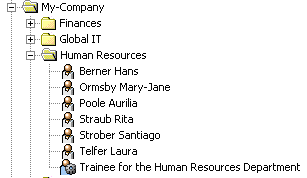
Using Risk Management
In this exercise, we show you how to activate and use DirX Identity’s risk management system. DirX Identity’s Risk Calculation workflow can calculate a risk value for every user in a domain depending on the privileges assigned to the user. The workflow then assigns this risk value to three different levels: low, medium, and high, which are displayed in the different graphical user interfaces at the user. DirX Identity’s risk management system also provides a risk approval workflow that simulates a risk level resolution for a requested privilege assignment and enforces an additional approval step if the risk level is computed to be high.
Activating Risk Management
First, we’ll activate risk management at the sample My-Company domain using DirX Identity Manager’s Provisioning → Domain Configuration view:
-
In DirX Identity Manager → Provisioning → Domain Configuration view, select the My-Company domain object.
-
Click Edit.
-
In the Compliance tab, check Risk Check active if it isn’t already checked.
-
Click Save.
Next, we’ll add the RiskGovernance resource family to the resource families of the Java-based Server:
-
Log in to DirX Identity Manager’s Connectivity view group, and then select the Expert View.
-
Navigate to Connectivity Configuration Data → Configuration → DirX Identity Servers → Java Servers → My-Company → *My-Company-S1-*servername and click on the last entry.
-
In the Resource Families tab, click Edit. Now move RiskGovernance from the Available table to the Selected table. Click Save.
Now we’ll activate the risk policy from the Provisioning → Policies view:
-
Navigate to Policies → Risk Policies → Risk Policy.
-
In the General tab, check Is active (if it’s not already activated).
-
The Risk Limits fields in the General tab define values used for risk classification into low, medium, and high risk levels. We’ll use these values in this exercise, so leave them as they are.
-
The Risk Factors section in the General tab allows you to define up to nine different risk factors and their corresponding risk weights. We’ll use the risk factors and weights supplied with this risk policy, so leave this section as it is.
Finally, we’ll activate the Risk Calculation workflow RiskGvnController in the sample domain:
-
In Connectivity, select the Expert View.
-
Navigate to Connectivity Configuration Data → Workflows → Default → Identity Store, copy the entry RiskGvnContoller to Connectivity Configuration Data → Workflows → My-Company → Main → Identity Store by pressing and holding down the Strg-key and the left mouse button and then moving the cursor with this workflow to the new location.
-
Click on the new entry Connectivity Configuration Data → Workflows → My-Company → Main → Identity Store → RiskGvnContoller.
-
In the General tab, check Is Active.
Now we need to restart the Java-based Server and Apache Tomcat for Web Center for our changes to take effect.
Configuring Risk Values for Target Systems and Groups
The calculation of the risk values for the users depends on the risk factors and their risk weights defined in the risk policy and the defined risk weights of the target systems and of their individual groups. For the sample domain, the risk weights have already been specified:
-
In Provisioning → Target Systems, click Intranet Portal and then click the Advanced tab. At the bottom of the page, you’ll see the Risk Parameters with the Target system risk weight set to 2.
-
Navigate to Intranet Portal → Accounts and Groups → General → Manager Portal and click the Operational tab. At the bottom of the page, you’ll see the Risk Parameters with the Group risk weight set to 3.
-
Look at the risk weights of the other target systems and their groups. We’ll leave these values as they are.
Checking User Risk Parameters
As of now, risk values have not been calculated and the risk parameters of the user entries are empty. We can see this using DirX Identity Manager’s Provisioning view in the sample domain:
-
In Provisioning, select Users → My-Company → Global IT → and click Pitton Lavina to select it.
-
Click the Risk Parameters tab to open it. You can see that all fields in this tab are empty.
-
Look at the Risk Parameters tabs of other users. All the fields in each tab are empty.
Now we’ll run the Risk Calculation workflow for the first time:
-
Log in to DirX Identity’s Connectivity view group and then select the Expert View.
-
Navigate to Connectivity Configuration Data → Workflows → My-Company → Main → Identity Store → RiskGvnContoller. Right-click this entry and then select Run Workflow.
Now go back to the Provisioning → Users view in the sample domain to look at the user entries again:
-
In Provisioning, select Users → My-Company → Global IT → and click Pitton Lavina to select it.
-
Click the Risk Parameters tab to open it. You can see that the fields are now populated and the Risk Level is set according to the Compound score, which is calculated from the Risk Factors and the defined limits in the risk policy.
-
Look at the risk parameters of other users, especially Taspatch Nik and Wagner Retha. All the fields in their Risk Parameters tabs are now filled.
-
Now switch to the Web Center and log in as Taspatch Nik:
-
Open Self Service → Display summary. You see the risk displayed as a circle filled in red. If you move the mouse over the circle, you can see the tool tip High.
-
Now choose Users → Select user and then click Search.
-
Step through the different result pages. You will find that most of the users have a low risk value (indicated with a circle outlined in green) and Wagner Retha at the last page with a medium risk level (indicated with a yellow half-circle).
-
Log out of Web Center and return to the DirX Identity Manager.
Changing a Target System Weight
Now we’ll change the risk weight of the DirXmetaRole target system in the Provisioning view of the sample domain and then recalculate the risk levels in the Connectivity view:
-
In Provisioning → Target Systems, click DirXmetaRole.
-
In the Advanced tab, change Target system risk weight from 8 to 1.
Now switch to the Expert View in the Connectivity view group and then run the risk calculation workflow again:
-
Navigate to Connectivity Configuration Data → Workflows → My-Company → Main → Identity Store → RiskGvnController.
-
Right-click the RiskGvnController entry and then select Run Workflow.
Now look again at the user entries in the Provisioning → Users view:
-
In Provisioning, select Users → My-Company → Global IT → and then click Taspatch Nik to select it.
-
Click the Risk Parameters tab to open it. You can see that his Risk Level has changed to Low.
-
Look at the risk parameters of the other users, especially Pitton Lavina and Wagner Retha. All Risk Levels are now set to Low.
Switch to the Web Center and log in as Taspatch Nik:
-
Open Self Service → Display summary. You see the risk displayed as Low.
-
Now choose Users → Select user and then click Search.
-
Step through the different result pages. You will find that mostly all of the users have a low risk value.
-
Log out from the Web Center and return to the DirX Identity Manager.
Now we’ll use the Provisioning → Target Systems view in the sample domain to return the DirXmetaRole target system’s risk weight to its original value:
-
In Provisioning, select Target Systems and then click on DirXmetarole to select it.
-
In the Advanced tab, change Target system risk weight from 1 to 8.
Changing the Risk Limits in the Risk Policy
In this step, we’ll change the risk policy' risk limits and then recalculate risk using the new risk limits:
-
In Provisioning, select Policies → Risk Policies → Risk Policy.
-
Change the Upper Risk limit from 3.5 to 1.5 and change the Lower Risk limit from 1.5 to 0.
Now let’s run the Risk Calculation workflow again:
-
In the Connectivity view group, select the Expert View.
-
Navigate to Connectivity Configuration Data → Workflows → My-Company → Main → Identity Store.
-
Right-click RiskGvnController and then select Run Workflow.
Now switch to Web Center and log in as Taspatch Nik:
-
Choose Users → Select user and then click Search.
-
Step through the different result pages. You will now find a lot of users with medium risk level (for example, Pitton Lavina) and some of the users with high risk level (for example,. Wagner Retha).
-
Log out from Web Center and return to DirX Identity Manager.
Now we’ll return the risk limits of the risk policy’s risk limits to their original values:
-
In the Provisioning view, navigate to Policies → Risk Policies → Risk Policy.
-
Change the Upper Risk limit from 1.5 back to 3.5 and the Lower Risk limit from 0 back to 1.5.
Now we’ll run the Risk Calculation workflow again:
-
In Connectivity → Expert view, navigate to Connectivity Configuration Data → Workflows → My-Company → Main → Identity Store.
-
Right-click RiskGvnController and then select Run Workflow.
Scheduling the Risk Calculation Workflow
It makes sense to set up a schedule for the Risk Calculation workflow on a regular basis, for example, once a day:
-
In DirX Identity Manager’s Connectivity view group, select the Expert View.
-
Navigate to Connectivity Configuration Data → Schedules → My-Company.
-
Right click on the My-Company entry and then select New → Schedule.
-
In Name, specify Risk Schedule.
-
Check Active.
-
Choose the workflow Workflows → My-Company → Main → Identity Store → RiskGvnController by clicking on the icon button with the three dots.
-
Click OK.
Configuring the Risk Approval Workflow
DirX Identity provides a template risk approval assignment workflow that enforces an extra approval step from the company head if a requested privilege assignment will result in a high risk level for the user. In this exercise, we’ll demonstrate how to activate this workflow in the My-Company sample domain.
First, we need to copy the example workflow RiskApproval to the My-Company domain:
-
In Provisioning → Workflows, navigate to Workflows → Definitions → Default → Assignments.
-
Copy the RiskApproval entry to Workflows → Definitions → My-Company → Approval by pressing and holding down the Strg-key and the left mouse button and moving the cursor with this workflow to the new location.
-
Click on the new entry Workflows → Definitions → My-Company → Approval → RiskApproval.
-
In the Workflow tab, check Active to activate the workflow.
-
Open the When Applicable tab. You can see that the Priority is set to 99, which is now the highest priority of all activated approval workflows. As a result, this workflow will be started for the next privilege approval.
-
Restart the Java-based Server and Apache Tomcat for the Web Center for the changes to take effect.
We want our risk approval workflow to flag for additional approval a risk level change from medium to high. Let’s look at a user’s current risk score:
-
In the Provisioning → Users view, navigate to Users → My-Company → Finances → Dalmar Christopher.
-
In the Risk Parameters tab, look for the Compound score value. This value should be at about 2 and the Risk Level should be Medium.
Next, we’ll set the risk limit for high risk in our risk policy to a value that is a little bit higher than the Compound score of Dalmar Christopher:
-
In the Provisioning → Policy view, navigate to Policies → Risk Policies → Risk Policy.
-
Change the Upper Risk limit from 3.5 to 2.1.
Now we’ll run the risk calculation workflow again:
-
In Connectivity → Expert View, navigate to Connectivity Configuration Data → Workflows → My-Company → Main → Identity Store.
-
Right-click RiskGvnController and then select Run Workflow.
Next, we’ll use Web Center to assign a new role to Dalmar Christopher.
-
Log in to Web Center as Taspatch Nik.
-
Open Users → Select user.
-
Enter Dalmar in the search field and then click Search. You see that Dalmar Christopher is still at a medium risk level.
-
Now click Dalmar Christopher and then select Users → Assign privileges.
-
Enter DXR in the search field and then click Search.
-
Select DXR Domain Administrator and then move it from Available roles to the Assigned roles. Click Save.
-
Select Work list → Show initiated workflows. You’ll see the assignment workflow for Dalmar Christopher. Click on this entry.
-
In Workflow Details, you can see that the Calculate Risk activity is finished, and Wagner Retha must approve this privilege assignment.
-
Log out from Web Center and return to DirX Identity Manager.
Let’s verify the current workflow status:
-
In Provisioning → Workflows, navigate to Workflows → Monitor → My-Company → Approval → RiskApproval → current date.
-
Click on the running workflow Dalmar Christopher → DXR Domain Aministrator.
-
Open the General tab. You can see that the Calculate Risk activity is finished, and the activity approve by Priv Manager is the current step.
Now we need to approve the new privilege as the privilege manager Wagner Retha. We’ll use Web Center for this task:
-
Log to Web Center as Wagner Retha.
-
Click the open task approval by Privilege Managers. You can see that the risk after approval would be high. Accept this approval and then logout from Web Center.
-
Return to DirX Identity Manager’s Provisioning → Workflows view and refresh the General workflow view. Now the activity approve by Priv Manager is finished and the activity Approval by Company Head is the current step. This additional activity is started because the resulting risk level is high. If it was medium or low, no additional approval activity would be started.
Next, we’ll approve the new privilege as the head of the company:
-
Return to the Web Center and log in as Hungs Olivier.
-
Click the open task Approval by Company Head (high risk) and then accept this request.
-
Log out from the Web Center.
Let’s have a look at the results of this approval workflow:
-
Return to the DirX Identity Manager’s Provisioning → Workflows view and refresh the General tab for the risk approval workflow.
-
Now the activities Approval by Company Head and Apply Changes are finished, and the privilege is successfully assigned.
-
In Provisioning → Users, navigate to Users → My-Company → Finances → Dalmar Christopher.
-
Open the Assigned Roles tab. You can see the role DXR Domain Administrator in the enabled state.
-
Open the Risk Parameters tab and look at the Compound score value. This value has not changed and the risk level is still medium. The reason for this is that the approval workflow does not recalculate the risk levels. The Risk Calculation workflow needs to run to recalculate the risk.
Let’s run the Risk Calculation workflow again and then re-check Dalmar Christopher:
-
In Connectivity → Expert View, navigate to Connectivity Configuration Data → Workflows → My-Company → Main → Identity Store.
-
Right-click RiskGvnController and then select Run Workflow.
-
Return to the user entry Dalmar Christopher in Provisioning → Users. Refresh the Risk Parameters tab and look at the Compound score value. This value is now higher than 2.1 and the Risk Level has been changed to High.